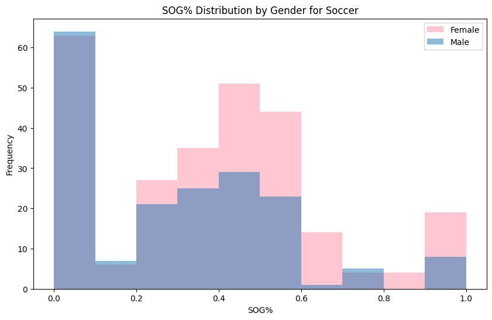
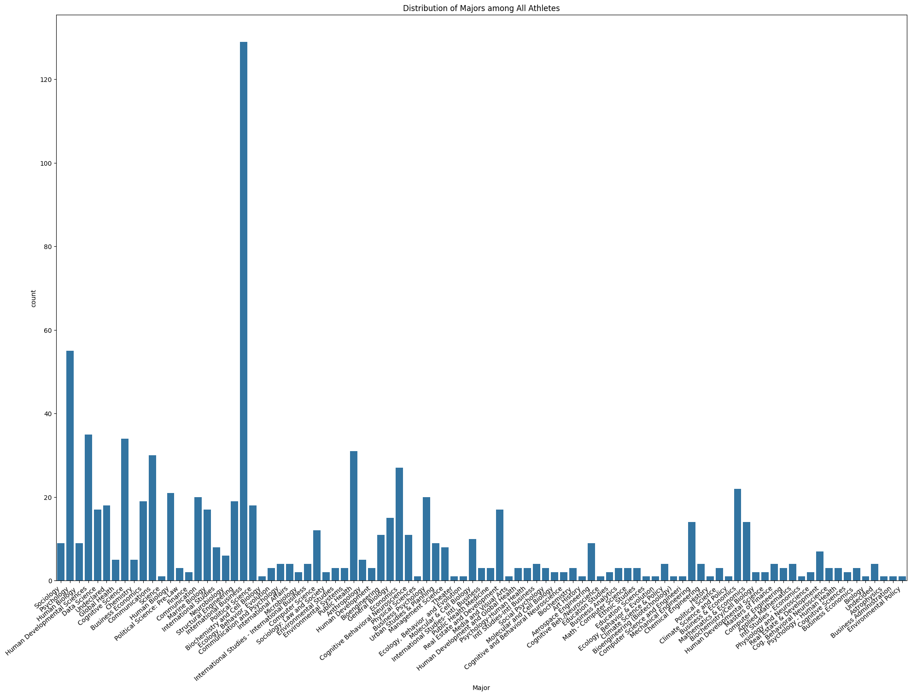
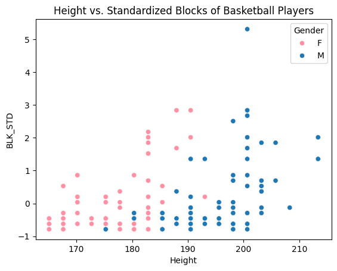
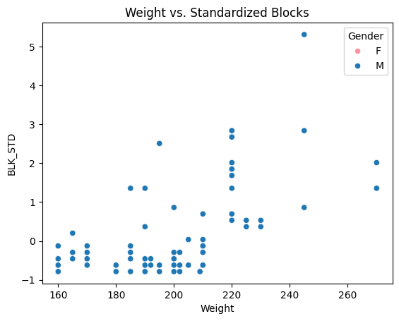
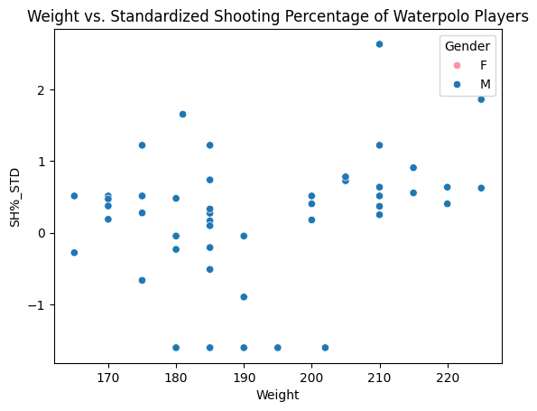

Code
import pandas as pd
import numpy as np
import matplotlib.pyplot as plt
import seaborn as sns
import scipy as sci
import scipy.stats as statsThe following research project explores the relationship between the athletic performace of student-athletes at UCSD with a focus on their enrollment in STEM versus non-STEM majors and the impact of physical measurements such as height and weight. This study investigates how these relationships differ across genders in the context of four sports: basketball, soccer, volleyball, and water polo.
Prior research suggested that a common trend among student-athletes is that they may opt for less academically demanding majors to accommodate their athletic commitments. Moreover, given the physical advantages typically associated with male athletes, such as greater height and muscle mass, we anticipate these attributes to correlate with improved athletic performance. With that being said, we hypothesize that student-athletes majoring in non-STEM related fields and those with advantageous physical measurements will display a better performance in sports, a trend we expect to remain stable across genders. To investigate the relationships, we utilized different datasets consisting of biographical data, academic information, and performance statistics of UCSD student-athletes.
We conducted an exploratory data analysis and delved into the performance in sports across genders and the distribution of physical attributes among gender and sports. Male athletes had a wider range in height and weight distributions, reflecting greater variability. However, these physical differences did not correlate with consistent differences in athletic performance across the sports examined. Despite noticeable disparities in height and weight, particularly in male athletes, the expected correlation with enhanced performance was not uniformly observed. In conclusion, the hypothesis that non-STEM athletes and those with certain physical advantages would exhibit a better athletic performance is not clearly supported by our findings. While some trends aligned with our predictions, the anticipated stable trend across genders and the direct correlation between physical measurements and improved athletic performance did not reflect in the analyzed data. This suggests that other factors may also play a significant role in the athletic success across UCSD student-athletes.
What is the relationship between performance of student-athletes at UCSD as well as their academic interests (STEM vs non-STEM) and physical measurements (height/weight)? How do these relationships vary across genders?
Participating in extracurricular activities while balancing school can be challenging. Student-athletes generally have a busier schedule than most students. They have to juggle and coordinate their training schedules, assignment deadlines, class attendance, and more. We recognize that the academic workload on STEM majors is generally more extensive than non-STEM majors. Given this, we wanted to explore whether or not academic pursuits correlate with athletic performance. Specifically, we aim to investigate if there are differences in performance between STEM and non-STEM majors at UCSD given its heavy STEM influence.
In a study that investigates the relationship between athletic identity and the selection of academic majors among college student-athletes, they found that students who care more about sports generally choose a major with decreased academic rigor. Based on the findings from this study, we can assume that there is likely a positive correlation between athletic performance and non-STEM majors at UCSD. This correlation suggests that high-performing student-athletes might lean towards majors that offer more flexibility and less academic pressure. This allows them to manage their training and game schedules more effectively. Students who prioritize their sports success are more likely to choose a major that aligns and simply helps them meet the academic requirements. This assumption should be consistent across all genders.1
In addition, we wanted to study how athletes’ physical measurements such as their height and weight affect their performance. In further research, we looked into gender differences in terms of physical variances. Men are generally considered more powerful and have more strength compared to women because they have larger muscle mass and lower body fat. Also, men are taller and have longer limbs compared to women. With all this considered, men have a physical advantage in sports where strength and height are used. Despite efforts to promote gender equality in sports, these biological differences continue to shape athletic outcomes. Given that men generally have greater physical strength, height, and muscle mass compared to women, it is reasonable to assume that these differences may influence athletic performance outcomes, especially in sports that heavily rely on strength and height.2
Expanding on prior research, our study intends to explore multifaceted connections between athletic performance, physical attributes (height/weight), and academic preferences among those participating in basketball, soccer, volleyball, and water polo. We aim to investigate how these variables interrelate with performance rates across genders at UCSD. By analyzing these relationships, we aim to identify which factors most strongly correlate with higher athletic performance among male and female student-athletes at UCSD.
Our team hypothesizes that at UCSD, student-athletes from non-STEM fields and those with advantageous physical measurements (notably greater height and weight) tend to show enhanced sports performance, irrespective of gender. This pattern is anticipated due to the lower academic workload associated with non-STEM disciplines, allowing for more intensive training, and the natural advantage provided by superior physical attributes in athletic activities. We expect these relationships to be consistent across both male and female athletes, suggesting that the impact of academic interests and physical measurements on sports performance does not vary significantly by gender.
import pandas as pd
import numpy as np
import matplotlib.pyplot as plt
import seaborn as sns
import scipy as sci
import scipy.stats as statsDataset 1 was web scraped from the UCSD athletics website and ranges from the years 2005 or 2006 to 2024, as available, exported as csv, and then combined into one. It contains student athlete’s biographical information for both women’s and men’s basketball, soccer, volleyball, and water polo. This data includes the year, athlete’s jersey numbers, student names, the position they play, their height, weight, major, year in school, hometown school, sport they play, and gender. These metrics provide insights into the demographics, physical attributes, academic interests, and athletic positions of the student-athletes. Code doing the web scraping can be access through this link. For data wrangling, we will combine these 8 datasets into one, write functions to standardize height into centimeters, possibly separate the “HomeTownHighSchool” column into two columns, transform the “Class” column to integers, and add a column indicating gender. The most important variable is, as our hypothesis is testing the correlation between major and performance.
Dataset #2: Athlete Performance Data by Web Scraping
Dataset 2 was also web scraped from the UCSD athletics website and ranges from the years 2014 - 2024, as available, then cleaned and combined manually in excel format. It contains performance data from women’s and men’s sports. The sports include: basketball, soccer, volleyball, and water polo. Each data set has different variables that correlate best with the sport statistics. All of the integer variables that give the athletes’ statistics are important, as we will eventually combine these stats to determine a player’s overall performance, which will help us answer our research question. This overall performance score will allow us to combine the datasets and compare between athletes in different sports. Since currently we have 2 datasets (men and women) for each sports, we will combine two sex together into one datasets in the data wrangling.
With the two datasets, we plan on merging the data using student identifiers like their names and compare atheletes within different sports. The overall performance score we find from dataset 2 will allow us to combine the datasets and compare between athletes in different sports.
## CODE TO LOAD/CLEAN/TIDY/WRANGLE THE DATA
male_basketball_bio = pd.read_csv('data/athlete_bio/male_basketball_rosters.csv')
male_soccer_bio = pd.read_csv('data/athlete_bio/male_soccer_rosters.csv')
male_volleyball_bio = pd.read_csv('data/athlete_bio/male_volleyball_rosters.csv')
male_waterpolo_bio = pd.read_csv('data/athlete_bio/male_waterpolo_rosters.csv')
female_basketball_bio = pd.read_csv('data/athlete_bio/female_basketball_rosters.csv')
female_soccer_bio = pd.read_csv('data/athlete_bio/female_soccer_rosters.csv')
female_volleyball_bio = pd.read_csv('data/athlete_bio/female_volleyball_rosters.csv')
female_waterpolo_bio = pd.read_csv('data/athlete_bio/female_waterpolo_rosters.csv')
male_basketball_bio['Sport'] = 'Basketball'
male_soccer_bio['Sport'] = 'Soccer'
male_volleyball_bio['Sport'] = 'Volleyball'
male_waterpolo_bio['Sport'] = 'Water Polo'
male_basketball_bio['Gender'] = 'M'
male_soccer_bio['Gender'] = 'M'
male_volleyball_bio['Gender'] = 'M'
male_waterpolo_bio['Gender'] = 'M'
female_basketball_bio['Sport'] = 'Basketball'
female_soccer_bio['Sport'] = 'Soccer'
female_volleyball_bio['Sport'] = 'Volleyball'
female_waterpolo_bio['Sport'] = 'Water Polo'
female_basketball_bio['Gender'] = 'F'
female_soccer_bio['Gender'] = 'F'
female_volleyball_bio['Gender'] = 'F'
female_waterpolo_bio['Gender'] = 'F'
athlete_bio_scraped = pd.concat([female_basketball_bio, female_soccer_bio, female_volleyball_bio, female_waterpolo_bio,
male_basketball_bio, male_soccer_bio, male_volleyball_bio, male_waterpolo_bio], axis = 0)
athlete_bio_scraped = athlete_bio_scraped.reset_index().drop(columns = ['index'])
athlete_bio_scraped.head()| Year | JerseyNum | Name | Position | Height | Weight | Major | Class | HomeTownHighSchool | Sport | Gender | |
|---|---|---|---|---|---|---|---|---|---|---|---|
| 0 | 2005 | 10 | Michelle Osier | F | 6-1 | NaN | NaN | Fr. | Placerville, CA / Ponderosa HS | Basketball | F |
| 1 | 2005 | 11 | Cecily Connor | G | 5-8 | NaN | NaN | Fr. | Phoenix, AZ / Xavier College Prep | Basketball | F |
| 2 | 2005 | 12 | Kim Buffum | G | 5-9 | NaN | NaN | Jr. | San Clemente, CA / San Clemente HS | Basketball | F |
| 3 | 2005 | 13 | Meghan McGovern | G | 5-8 | NaN | NaN | Jr. | Trabuco Canyon, CA / Trabuco Hills HS | Basketball | F |
| 4 | 2005 | 14 | V'Lesha Wilcox | G | 5-8 | NaN | NaN | R-Fr. | Friona, TX / Friona HS | Basketball | F |
athlete_bio_scraped.dtypesYear int64
JerseyNum object
Name object
Position object
Height object
Weight float64
Major object
Class object
HomeTownHighSchool object
Sport object
Gender object
dtype: objectathlete_bio_scraped['Height'].unique()array(['6-1', '5-8', '5-9', '6-0', '5-10', '6-2', '5-6', '5-5', '6-3',
'5-7', '5-4', '5-11', '5-2', '5-3', '5-1', '6-4', '5-0', '-',
'6-5', '6-6', '6-8', '6-7', '6-9', '6-10', '7-0'], dtype=object)athlete_bio_scraped[athlete_bio_scraped['Height'] == '-']| Year | JerseyNum | Name | Position | Height | Weight | Major | Class | HomeTownHighSchool | Sport | Gender | |
|---|---|---|---|---|---|---|---|---|---|---|---|
| 717 | 2020 | NaN | Alyce Raumin | NaN | - | NaN | Public Health | Fr. | San Clemente, Calif. / San Clemente HS | Soccer | F |
athlete_bio_scraped = athlete_bio_scraped.drop(index = 717)
athlete_bio_scraped.head()| Year | JerseyNum | Name | Position | Height | Weight | Major | Class | HomeTownHighSchool | Sport | Gender | |
|---|---|---|---|---|---|---|---|---|---|---|---|
| 0 | 2005 | 10 | Michelle Osier | F | 6-1 | NaN | NaN | Fr. | Placerville, CA / Ponderosa HS | Basketball | F |
| 1 | 2005 | 11 | Cecily Connor | G | 5-8 | NaN | NaN | Fr. | Phoenix, AZ / Xavier College Prep | Basketball | F |
| 2 | 2005 | 12 | Kim Buffum | G | 5-9 | NaN | NaN | Jr. | San Clemente, CA / San Clemente HS | Basketball | F |
| 3 | 2005 | 13 | Meghan McGovern | G | 5-8 | NaN | NaN | Jr. | Trabuco Canyon, CA / Trabuco Hills HS | Basketball | F |
| 4 | 2005 | 14 | V'Lesha Wilcox | G | 5-8 | NaN | NaN | R-Fr. | Friona, TX / Friona HS | Basketball | F |
athlete_bio_scraped['Height'].unique()array(['6-1', '5-8', '5-9', '6-0', '5-10', '6-2', '5-6', '5-5', '6-3',
'5-7', '5-4', '5-11', '5-2', '5-3', '5-1', '6-4', '5-0', '6-5',
'6-6', '6-8', '6-7', '6-9', '6-10', '7-0'], dtype=object)# Convert Height column's unit from feet-inches to centermeters
def convert_height_tocm(height):
foot_ratio = 30.48 # 1 foot = 30.48 cm
inch_ratio = 2.54 # 1 inch = 2.54 cm
height_cm = 0
heights = height.split('-')
height_cm += int(heights[0])* foot_ratio
height_cm += int(heights[1])* inch_ratio
return height_cm
athlete_bio_scraped['Height'] = athlete_bio_scraped['Height'].apply(convert_height_tocm)
athlete_bio_scraped.head()| Year | JerseyNum | Name | Position | Height | Weight | Major | Class | HomeTownHighSchool | Sport | Gender | |
|---|---|---|---|---|---|---|---|---|---|---|---|
| 0 | 2005 | 10 | Michelle Osier | F | 185.42 | NaN | NaN | Fr. | Placerville, CA / Ponderosa HS | Basketball | F |
| 1 | 2005 | 11 | Cecily Connor | G | 172.72 | NaN | NaN | Fr. | Phoenix, AZ / Xavier College Prep | Basketball | F |
| 2 | 2005 | 12 | Kim Buffum | G | 175.26 | NaN | NaN | Jr. | San Clemente, CA / San Clemente HS | Basketball | F |
| 3 | 2005 | 13 | Meghan McGovern | G | 172.72 | NaN | NaN | Jr. | Trabuco Canyon, CA / Trabuco Hills HS | Basketball | F |
| 4 | 2005 | 14 | V'Lesha Wilcox | G | 172.72 | NaN | NaN | R-Fr. | Friona, TX / Friona HS | Basketball | F |
We keep null values for Weight column because weight stats for all female athletes are not disclosed and female athletes are important for our research question.
athlete_bio_scraped[(athlete_bio_scraped['Gender']=='F') & ~(athlete_bio_scraped['Weight'].isnull())]| Year | JerseyNum | Name | Position | Height | Weight | Major | Class | HomeTownHighSchool | Sport | Gender |
|---|
print(athlete_bio_scraped['Major'].unique())[nan 'Sociology' 'Psychology' 'Human Biology '
'Human Developmental Sciences' 'Data Science' 'Undeclared'
'Global Health' 'Cognitive Science' 'Chemistry' 'Business Economics'
'Communications' 'Science' 'Human Biology' 'Political Science: Pre-Law'
'Finance' 'Communication' 'Marine Biology' 'International Studies'
'Neurobiology' 'Structural Engineering' 'International Business'
'Political Science' 'Biochemistry and Cell Biology'
'Ecology, Behavior, Evolution' 'Communication and Psychology'
'International Affairs' 'Microbiology'
'International Studies - International Business' 'Computer Science'
'Sociology: Law and Society' 'Environmental Studies'
'Environmental Systems' 'Public Health' 'Anthropology'
'Human Development' 'Bioengineering' 'General Biology' 'Economics'
'Cognitive Behavioral Neuroscience' 'Physical Sciences'
'Business Psychology' 'Urban Studies & Planning' 'Management Science'
'Theater' 'Ecology, Behavior, and Evolution' 'Molecular & Cell Biology'
'International Studies- Intl. Business' 'Public Health Medicine'
'Real Estate and Development' 'Media and Visual Arts'
'Human Development and Global Health' 'Psychology-Human Health'
'Intl Studies-Intl Business' 'Social Psychology'
'Molecular and Cell Biology' 'Cognitive and Behavioral Neuroscience'
'Biochemistry' 'Art History' 'Aerospace Engineering'
'Cognitive Beh./Neuroscience' 'Education Studies' 'Business Analytics'
'Math - Computer Science' 'Ethnic Studies' 'Education Sciences'
'Ecology, Behavior & Evolution' 'Climate Science & Policy'
'Bioengineering (Biotechnology)' 'Computer Science and Engineeri'
'Mechanical Engineering' 'Chemical Engineering' 'History'
'Political Science ' 'Climate Science and Policy' 'Business & Economics'
'Mathematics & Economics' 'Biochemistry/Cell Biology'
'Human Developmental Science' 'Masters of Finance' 'Computer Engineering'
'Applied Mathematics' 'Intl Studies - Economics'
'Physiology and Neuroscience' 'Real Estate & Development'
'Cog. Behavioral Neuroscience' 'Psychology - Human Health'
'Cognitive Sciences' 'Business Economics ' 'Biology' 'Undecided'
'Astrophysics' 'Business Administration' 'Environmental Policy']Drop NaN values for Major
athlete_bio_scraped = athlete_bio_scraped.dropna(subset=['Major'])
athlete_bio_scraped.head()| Year | JerseyNum | Name | Position | Height | Weight | Major | Class | HomeTownHighSchool | Sport | Gender | |
|---|---|---|---|---|---|---|---|---|---|---|---|
| 218 | 2019 | 2 | Tyla Turner | G | 165.10 | NaN | Sociology | Jr. | San Bernardino, Calif. / Cajon HS | Basketball | F |
| 219 | 2019 | 4 | Emily Cangelosi | G | 175.26 | NaN | Psychology | R-So. | Agoura Hills, Calif. / Agoura HS | Basketball | F |
| 220 | 2019 | 10 | Julia Macabuhay | G | 167.64 | NaN | Psychology | So. | Los Angeles, Calif. / La Salle HS | Basketball | F |
| 221 | 2019 | 12 | Madison Baxter | G | 175.26 | NaN | Human Biology | So. | Pleasanton, Calif. / Foothill HS | Basketball | F |
| 222 | 2019 | 13 | Sydney Brown | G/F | 182.88 | NaN | Human Developmental Sciences | So. | Rexford, N.Y. / Blair Academy | Basketball | F |
print(athlete_bio_scraped['Major'].unique())['Sociology' 'Psychology' 'Human Biology ' 'Human Developmental Sciences'
'Data Science' 'Undeclared' 'Global Health' 'Cognitive Science'
'Chemistry' 'Business Economics' 'Communications' 'Science'
'Human Biology' 'Political Science: Pre-Law' 'Finance' 'Communication'
'Marine Biology' 'International Studies' 'Neurobiology'
'Structural Engineering' 'International Business' 'Political Science'
'Biochemistry and Cell Biology' 'Ecology, Behavior, Evolution'
'Communication and Psychology' 'International Affairs' 'Microbiology'
'International Studies - International Business' 'Computer Science'
'Sociology: Law and Society' 'Environmental Studies'
'Environmental Systems' 'Public Health' 'Anthropology'
'Human Development' 'Bioengineering' 'General Biology' 'Economics'
'Cognitive Behavioral Neuroscience' 'Physical Sciences'
'Business Psychology' 'Urban Studies & Planning' 'Management Science'
'Theater' 'Ecology, Behavior, and Evolution' 'Molecular & Cell Biology'
'International Studies- Intl. Business' 'Public Health Medicine'
'Real Estate and Development' 'Media and Visual Arts'
'Human Development and Global Health' 'Psychology-Human Health'
'Intl Studies-Intl Business' 'Social Psychology'
'Molecular and Cell Biology' 'Cognitive and Behavioral Neuroscience'
'Biochemistry' 'Art History' 'Aerospace Engineering'
'Cognitive Beh./Neuroscience' 'Education Studies' 'Business Analytics'
'Math - Computer Science' 'Ethnic Studies' 'Education Sciences'
'Ecology, Behavior & Evolution' 'Climate Science & Policy'
'Bioengineering (Biotechnology)' 'Computer Science and Engineeri'
'Mechanical Engineering' 'Chemical Engineering' 'History'
'Political Science ' 'Climate Science and Policy' 'Business & Economics'
'Mathematics & Economics' 'Biochemistry/Cell Biology'
'Human Developmental Science' 'Masters of Finance' 'Computer Engineering'
'Applied Mathematics' 'Intl Studies - Economics'
'Physiology and Neuroscience' 'Real Estate & Development'
'Cog. Behavioral Neuroscience' 'Psychology - Human Health'
'Cognitive Sciences' 'Business Economics ' 'Biology' 'Undecided'
'Astrophysics' 'Business Administration' 'Environmental Policy']# Add is_stem column to athelet bio dataset
stem_major_list = ['International Business', 'Sociology', 'Public Health',
'Real Estate and Development', 'Psychology',
'Cognitive Beh./Neuroscience', 'Global Health', 'Management Science',
'Business Psychology', 'Education Studies', 'Business Analytics',
'Math - Computer Science', 'Political Science',
'Education Sciences', 'Business Economics', 'Economics', 'Data Science',
'Cognitive Science', 'Ecology, Behavior & Evolution',
'Climate Science & Policy', 'Aerospace Engineering',
'Bioengineering (Biotechnology)', 'Cognitive Behavioral Neuroscience',
'General Biology' 'Marine Biology', 'Computer Science and Engineeri',
'Mechanical Engineering', 'Chemical Engineering', 'Neurobiology',
'Political Science ', 'International Affairs',
'Climate Science and Policy', 'Structural Engineering',
'Mathematics & Economics', 'Psychology - Human Health',
'International Studies', 'Molecular & Cell Biology',
'Real Estate & Development', 'Urban Studies & Planning',
'Business Economics ', 'Human Biology ']
def is_STEM(major):
if major in stem_major_list:
return True
else:
return Falseathlete_bio_scraped['is_stem'] = athlete_bio_scraped['Major'].apply(is_STEM)
athlete_bio_scraped.head()| Year | JerseyNum | Name | Position | Height | Weight | Major | Class | HomeTownHighSchool | Sport | Gender | is_stem | |
|---|---|---|---|---|---|---|---|---|---|---|---|---|
| 218 | 2019 | 2 | Tyla Turner | G | 165.10 | NaN | Sociology | Jr. | San Bernardino, Calif. / Cajon HS | Basketball | F | True |
| 219 | 2019 | 4 | Emily Cangelosi | G | 175.26 | NaN | Psychology | R-So. | Agoura Hills, Calif. / Agoura HS | Basketball | F | True |
| 220 | 2019 | 10 | Julia Macabuhay | G | 167.64 | NaN | Psychology | So. | Los Angeles, Calif. / La Salle HS | Basketball | F | True |
| 221 | 2019 | 12 | Madison Baxter | G | 175.26 | NaN | Human Biology | So. | Pleasanton, Calif. / Foothill HS | Basketball | F | True |
| 222 | 2019 | 13 | Sydney Brown | G/F | 182.88 | NaN | Human Developmental Sciences | So. | Rexford, N.Y. / Blair Academy | Basketball | F | False |
def convert_name(name):
name = name.split(', ')
if len(name) == 2:
return name[1] + ' ' + name[0]
else:
return name[0]performance_men_basketball = pd.read_excel('data/performance_data/excel_condensed/men basketball.xlsx')
performance_men_basketball['Gender'] = 'M'
performance_women_basketball = pd.read_excel('data/performance_data/excel_condensed/women basketball.xlsx')
performance_women_basketball['Gender'] = 'F'
basketball = pd.concat([performance_men_basketball,performance_women_basketball])
basketball.head()| # | Player | GP-GS | MIN | AVG | FG FG-FGA | FG% | 3PT\n3FG-FGA | 3FG% | FT FT-FTA | ... | PF | DQ | A | TO | BLK | STL | PTS | AVG.2 | Year | Gender | |
|---|---|---|---|---|---|---|---|---|---|---|---|---|---|---|---|---|---|---|---|---|---|
| 0 | 13 | Klie, Adam | 33-33 | 1048 | 31.8 | 188-373 | 0.504 | 23-52 | 0.442 | 111-187 | ... | 94 | 3 | 154 | 74 | 6 | 26 | 510 | 15.5 | 2016 | M |
| 1 | 44 | Hansen, Chris | 31-30 | 700 | 22.6 | 143-283 | 0.505 | 18-44 | 0.409 | 83-95 | ... | 69 | 0 | 21 | 51 | 22 | 5 | 387 | 12.5 | 2016 | M |
| 2 | 14 | Oshita, Christian | 33-33 | 868 | 26.3 | 126-268 | 0.470 | 52-123 | 0.423 | 56-73 | ... | 102 | 4 | 34 | 38 | 4 | 11 | 360 | 10.9 | 2016 | M |
| 3 | 1 | Lipovic, Aleks | 25-18 | 537 | 21.5 | 71-162 | 0.438 | 63-145 | 0.434 | 17-19 | ... | 41 | 0 | 40 | 14 | 2 | 10 | 222 | 8.9 | 2016 | M |
| 4 | 11 | Everman, Scott | 33-5 | 623 | 18.9 | 79-182 | 0.434 | 52-133 | 0.391 | 29-31 | ... | 48 | 1 | 18 | 24 | 8 | 13 | 239 | 7.2 | 2016 | M |
5 rows × 25 columns
convert name from Last, First to First Last
basketball['Player'] = basketball['Player'].apply(convert_name)
basketball.head()| # | Player | GP-GS | MIN | AVG | FG FG-FGA | FG% | 3PT\n3FG-FGA | 3FG% | FT FT-FTA | ... | PF | DQ | A | TO | BLK | STL | PTS | AVG.2 | Year | Gender | |
|---|---|---|---|---|---|---|---|---|---|---|---|---|---|---|---|---|---|---|---|---|---|
| 0 | 13 | Adam Klie | 33-33 | 1048 | 31.8 | 188-373 | 0.504 | 23-52 | 0.442 | 111-187 | ... | 94 | 3 | 154 | 74 | 6 | 26 | 510 | 15.5 | 2016 | M |
| 1 | 44 | Chris Hansen | 31-30 | 700 | 22.6 | 143-283 | 0.505 | 18-44 | 0.409 | 83-95 | ... | 69 | 0 | 21 | 51 | 22 | 5 | 387 | 12.5 | 2016 | M |
| 2 | 14 | Christian Oshita | 33-33 | 868 | 26.3 | 126-268 | 0.470 | 52-123 | 0.423 | 56-73 | ... | 102 | 4 | 34 | 38 | 4 | 11 | 360 | 10.9 | 2016 | M |
| 3 | 1 | Aleks Lipovic | 25-18 | 537 | 21.5 | 71-162 | 0.438 | 63-145 | 0.434 | 17-19 | ... | 41 | 0 | 40 | 14 | 2 | 10 | 222 | 8.9 | 2016 | M |
| 4 | 11 | Scott Everman | 33-5 | 623 | 18.9 | 79-182 | 0.434 | 52-133 | 0.391 | 29-31 | ... | 48 | 1 | 18 | 24 | 8 | 13 | 239 | 7.2 | 2016 | M |
5 rows × 25 columns
performance_men_soccer = pd.read_excel('data/performance_data/excel_condensed/men soccer.xlsx')
performance_men_soccer['Gender'] = 'M'
performance_women_soccer = pd.read_excel('data/performance_data/excel_condensed/women soccer.xlsx')
performance_women_soccer['Gender'] = 'F'
soccer = pd.concat([performance_men_soccer,performance_women_soccer])
soccer.head()| # | Player | GP | G | A | PTS | SH | SH% | SOG | SOG% | YC-RC | GW | PK-ATT | Year | Gender | |
|---|---|---|---|---|---|---|---|---|---|---|---|---|---|---|---|
| 0 | 8 | Bagheri, Andisheh | 21 | 10.0 | 2 | 22 | 44 | 0.227 | 18 | 0.409 | NaN | 6 | 4-4 | 2013 | M |
| 1 | 9 | Canale, Alessandro | 18 | 5.0 | 3 | 13 | 42 | 0.119 | 20 | 0.476 | NaN | 1 | 0-0 | 2013 | M |
| 2 | 2 | Wolfrom, Cory | 20 | 3.0 | 2 | 8 | 34 | 0.088 | 14 | 0.412 | NaN | 2 | 0-0 | 2013 | M |
| 3 | 7 | Pleskow, Will | 12 | 1.0 | 4 | 6 | 11 | 0.091 | 4 | 0.364 | NaN | 1 | 0-0 | 2013 | M |
| 4 | 4 | Lamming, Gavin | 22 | 2.0 | 1 | 5 | 13 | 0.154 | 4 | 0.308 | NaN | 1 | 0-0 | 2013 | M |
convert names
soccer = soccer.dropna(subset=['Player'])
soccer['Player'] = soccer['Player'].apply(convert_name)
soccer.head()| # | Player | GP | G | A | PTS | SH | SH% | SOG | SOG% | YC-RC | GW | PK-ATT | Year | Gender | |
|---|---|---|---|---|---|---|---|---|---|---|---|---|---|---|---|
| 0 | 8 | Andisheh Bagheri | 21 | 10.0 | 2 | 22 | 44 | 0.227 | 18 | 0.409 | NaN | 6 | 4-4 | 2013 | M |
| 1 | 9 | Alessandro Canale | 18 | 5.0 | 3 | 13 | 42 | 0.119 | 20 | 0.476 | NaN | 1 | 0-0 | 2013 | M |
| 2 | 2 | Cory Wolfrom | 20 | 3.0 | 2 | 8 | 34 | 0.088 | 14 | 0.412 | NaN | 2 | 0-0 | 2013 | M |
| 3 | 7 | Will Pleskow | 12 | 1.0 | 4 | 6 | 11 | 0.091 | 4 | 0.364 | NaN | 1 | 0-0 | 2013 | M |
| 4 | 4 | Gavin Lamming | 22 | 2.0 | 1 | 5 | 13 | 0.154 | 4 | 0.308 | NaN | 1 | 0-0 | 2013 | M |
soccer['YC-RC'].value_counts()YC-RC
0-0 15
1-0 10
2-0 9
3-0 6
2-1 1
4-0 1
Name: count, dtype: int64soccer = soccer.drop(columns = 'YC-RC')
soccer.head()| # | Player | GP | G | A | PTS | SH | SH% | SOG | SOG% | GW | PK-ATT | Year | Gender | |
|---|---|---|---|---|---|---|---|---|---|---|---|---|---|---|
| 0 | 8 | Andisheh Bagheri | 21 | 10.0 | 2 | 22 | 44 | 0.227 | 18 | 0.409 | 6 | 4-4 | 2013 | M |
| 1 | 9 | Alessandro Canale | 18 | 5.0 | 3 | 13 | 42 | 0.119 | 20 | 0.476 | 1 | 0-0 | 2013 | M |
| 2 | 2 | Cory Wolfrom | 20 | 3.0 | 2 | 8 | 34 | 0.088 | 14 | 0.412 | 2 | 0-0 | 2013 | M |
| 3 | 7 | Will Pleskow | 12 | 1.0 | 4 | 6 | 11 | 0.091 | 4 | 0.364 | 1 | 0-0 | 2013 | M |
| 4 | 4 | Gavin Lamming | 22 | 2.0 | 1 | 5 | 13 | 0.154 | 4 | 0.308 | 1 | 0-0 | 2013 | M |
performance_men_volleyball = pd.read_excel('data/performance_data/excel_condensed/men volleyball.xlsx')
performance_men_volleyball['Gender'] = 'M'
performance_women_volleyball = pd.read_excel('data/performance_data/excel_condensed/women volleyball.xlsx')
performance_women_volleyball['Gender'] = 'F'
volleyball = pd.concat([performance_men_volleyball,performance_women_volleyball])
volleyball.head()| # | Player | SP | K | K/S | Attack E | Attack TA | Pct | Set A | Set A/S | ... | Dig DIG/S | BS | BA | Blocking BLK | Blocking BLK/S | BE | BHE | PTS | Year | Gender | |
|---|---|---|---|---|---|---|---|---|---|---|---|---|---|---|---|---|---|---|---|---|---|
| 0 | 1 | Lew, Ryan | 77 | 0 | 0.00 | 0 | 0 | 0.000 | 33 | 0.43 | ... | 2.00 | 0 | 0 | 0 | 0.00 | 0 | 1 | 0.0 | 2017 | M |
| 1 | 2 | Colbert, Ian | 96 | 191 | 1.99 | 90 | 531 | 0.190 | 14 | 0.15 | ... | 1.50 | 2 | 18 | 20 | 0.21 | 4 | 2 | 217.0 | 2017 | M |
| 2 | 3 | Blaich, Ryan | 25 | 0 | 0.00 | 0 | 1 | 0.000 | 34 | 1.36 | ... | 0.48 | 2 | 2 | 4 | 0.16 | 0 | 2 | 5.0 | 2017 | M |
| 3 | 7 | Manchenko, Calvin | 50 | 25 | 0.50 | 17 | 75 | 0.107 | 3 | 0.06 | ... | 0.42 | 1 | 6 | 7 | 0.14 | 0 | 2 | 31.0 | 2017 | M |
| 4 | 8 | Schmidt, Josh | 20 | 9 | 0.45 | 3 | 22 | 0.273 | 3 | 0.15 | ... | 0.75 | 0 | 5 | 5 | 0.25 | 1 | 0 | 11.5 | 2017 | M |
5 rows × 25 columns
convert names
volleyball['Player'] = volleyball['Player'].apply(convert_name)
volleyball.head()| # | Player | SP | K | K/S | Attack E | Attack TA | Pct | Set A | Set A/S | ... | Dig DIG/S | BS | BA | Blocking BLK | Blocking BLK/S | BE | BHE | PTS | Year | Gender | |
|---|---|---|---|---|---|---|---|---|---|---|---|---|---|---|---|---|---|---|---|---|---|
| 0 | 1 | Ryan Lew | 77 | 0 | 0.00 | 0 | 0 | 0.000 | 33 | 0.43 | ... | 2.00 | 0 | 0 | 0 | 0.00 | 0 | 1 | 0.0 | 2017 | M |
| 1 | 2 | Ian Colbert | 96 | 191 | 1.99 | 90 | 531 | 0.190 | 14 | 0.15 | ... | 1.50 | 2 | 18 | 20 | 0.21 | 4 | 2 | 217.0 | 2017 | M |
| 2 | 3 | Ryan Blaich | 25 | 0 | 0.00 | 0 | 1 | 0.000 | 34 | 1.36 | ... | 0.48 | 2 | 2 | 4 | 0.16 | 0 | 2 | 5.0 | 2017 | M |
| 3 | 7 | Calvin Manchenko | 50 | 25 | 0.50 | 17 | 75 | 0.107 | 3 | 0.06 | ... | 0.42 | 1 | 6 | 7 | 0.14 | 0 | 2 | 31.0 | 2017 | M |
| 4 | 8 | Josh Schmidt | 20 | 9 | 0.45 | 3 | 22 | 0.273 | 3 | 0.15 | ... | 0.75 | 0 | 5 | 5 | 0.25 | 1 | 0 | 11.5 | 2017 | M |
5 rows × 25 columns
performance_men_waterpolo = pd.read_excel('data/performance_data/excel_condensed/men waterpolo.xlsx')
performance_men_waterpolo['Gender'] = 'M'
performance_women_waterpolo = pd.read_excel('data/performance_data/excel_condensed/women waterpolo.xlsx')
performance_women_waterpolo['Gender'] = 'F'
waterpolo = pd.concat([performance_men_waterpolo,performance_women_waterpolo])
waterpolo.head()| # | Player | GP | SH | G | A | PTS | SH% | EX | DEX | STL | FB | Sprint | Year | Gender | |
|---|---|---|---|---|---|---|---|---|---|---|---|---|---|---|---|
| 0 | 4 | Latkovic, Vedran | 24 | 121 | 53 | 16 | 69 | 0.438 | 18 | 10 | 14 | 3 | 0-2 | 2021 | M |
| 1 | 12 | Hilde-Jones, Calder | 24 | 100 | 59 | 0 | 59 | 0.590 | 10 | 40 | 11 | 2 | 0-0 | 2021 | M |
| 2 | 24 | Likins, Kaden | 24 | 79 | 33 | 26 | 59 | 0.418 | 29 | 4 | 9 | 6 | 5-9 | 2021 | M |
| 3 | 8 | Augusto, Manuel | 24 | 70 | 31 | 25 | 56 | 0.443 | 27 | 2 | 15 | 7 | 8-19 | 2021 | M |
| 4 | 7 | Wilson, Miles | 24 | 59 | 29 | 26 | 55 | 0.492 | 15 | 3 | 6 | 3 | 2-2 | 2021 | M |
convert names
waterpolo['Player'] = waterpolo['Player'].apply(convert_name)
waterpolo.head()| # | Player | GP | SH | G | A | PTS | SH% | EX | DEX | STL | FB | Sprint | Year | Gender | |
|---|---|---|---|---|---|---|---|---|---|---|---|---|---|---|---|
| 0 | 4 | Vedran Latkovic | 24 | 121 | 53 | 16 | 69 | 0.438 | 18 | 10 | 14 | 3 | 0-2 | 2021 | M |
| 1 | 12 | Calder Hilde-Jones | 24 | 100 | 59 | 0 | 59 | 0.590 | 10 | 40 | 11 | 2 | 0-0 | 2021 | M |
| 2 | 24 | Kaden Likins | 24 | 79 | 33 | 26 | 59 | 0.418 | 29 | 4 | 9 | 6 | 5-9 | 2021 | M |
| 3 | 8 | Manuel Augusto | 24 | 70 | 31 | 25 | 56 | 0.443 | 27 | 2 | 15 | 7 | 8-19 | 2021 | M |
| 4 | 7 | Miles Wilson | 24 | 59 | 29 | 26 | 55 | 0.492 | 15 | 3 | 6 | 3 | 2-2 | 2021 | M |
basketball_all = pd.merge(athlete_bio_scraped[athlete_bio_scraped['Sport']=='Basketball'], basketball.drop(columns=['Year', 'Gender']), left_on='Name', right_on='Player')
basketball_all = basketball_all.drop(columns=['Player'])
basketball_all.head()| Year | JerseyNum | Name | Position | Height | Weight | Major | Class | HomeTownHighSchool | Sport | ... | Rebounds TOT | AVG.1 | PF | DQ | A | TO | BLK | STL | PTS | AVG.2 | |
|---|---|---|---|---|---|---|---|---|---|---|---|---|---|---|---|---|---|---|---|---|---|
| 0 | 2019 | 2 | Tyla Turner | G | 165.10 | NaN | Sociology | Jr. | San Bernardino, Calif. / Cajon HS | Basketball | ... | 180 | 6.0 | 80 | 2 | 74 | 62 | 2 | 27 | 359 | 12.0 |
| 1 | 2019 | 2 | Tyla Turner | G | 165.10 | NaN | Sociology | Jr. | San Bernardino, Calif. / Cajon HS | Basketball | ... | 73 | 4.9 | 40 | 1 | 59 | 41 | 2 | 24 | 177 | 11.8 |
| 2 | 2019 | 4 | Emily Cangelosi | G | 175.26 | NaN | Psychology | R-So. | Agoura Hills, Calif. / Agoura HS | Basketball | ... | 31 | 1.5 | 19 | 0 | 9 | 8 | 1 | 5 | 56 | 2.7 |
| 3 | 2019 | 4 | Emily Cangelosi | G | 175.26 | NaN | Psychology | R-So. | Agoura Hills, Calif. / Agoura HS | Basketball | ... | 56 | 2.0 | 16 | 0 | 9 | 12 | 2 | 8 | 56 | 2.0 |
| 4 | 2019 | 4 | Emily Cangelosi | G | 175.26 | NaN | Psychology | R-So. | Agoura Hills, Calif. / Agoura HS | Basketball | ... | 59 | 3.9 | 31 | 1 | 13 | 20 | 2 | 9 | 136 | 9.1 |
5 rows × 34 columns
soccer_all = pd.merge(athlete_bio_scraped[athlete_bio_scraped['Sport']=='Soccer'], soccer.drop(columns=['Year', 'Gender']), left_on='Name', right_on='Player')
soccer_all = soccer_all.drop(columns=['Player'])
soccer_all.head()| Year | JerseyNum | Name | Position | Height | Weight | Major | Class | HomeTownHighSchool | Sport | ... | GP | G | A | PTS | SH | SH% | SOG | SOG% | GW | PK-ATT | |
|---|---|---|---|---|---|---|---|---|---|---|---|---|---|---|---|---|---|---|---|---|---|
| 0 | 2019 | 0 | Grace Vlandis | GK | 170.18 | NaN | Human Developmental Sciences | Fr. | Napa, Calif. / Napa HS | Soccer | ... | 1 | 0.0 | 0 | 0 | 0 | 0.0 | 0 | 0.000 | 0 | 0-0 |
| 1 | 2019 | 1 | Angelica Ramos | GK | 172.72 | NaN | Cognitive Science | R-Sr. | San Clemente, CA / JSerra Catholic HS | Soccer | ... | 19 | 0.0 | 0 | 0 | 0 | 0.0 | 0 | 0.000 | 0 | 0-0 |
| 2 | 2019 | 1 | Angelica Ramos | GK | 172.72 | NaN | Cognitive Science | R-Sr. | San Clemente, CA / JSerra Catholic HS | Soccer | ... | 24 | 0.0 | 0 | 0 | 0 | 0.0 | 0 | 0.000 | 0 | 0-0 |
| 3 | 2019 | 1 | Angelica Ramos | GK | 172.72 | NaN | Cognitive Science | R-Sr. | San Clemente, CA / JSerra Catholic HS | Soccer | ... | 19 | 0.0 | 0 | 0 | 0 | 0.0 | 0 | 0.000 | 0 | 0-0 |
| 4 | 2019 | 2 | Katelyn Meyer | D/F | 172.72 | NaN | Marine Biology | Fr. | Campbell, Calif. / Archbishop Mitty HS | Soccer | ... | 17 | 1.0 | 0 | 2 | 9 | 0.0 | 1 | 0.111 | 0 | 0-0 |
5 rows × 23 columns
volleyball_all = pd.merge(athlete_bio_scraped[athlete_bio_scraped['Sport']=='Volleyball'], volleyball.drop(columns=['Year', 'Gender']), left_on='Name', right_on='Player')
volleyball_all = volleyball_all.drop(columns=['Player'])
volleyball_all.head()| Year | JerseyNum | Name | Position | Height | Weight | Major | Class | HomeTownHighSchool | Sport | ... | RE | DIG | Dig DIG/S | BS | BA | Blocking BLK | Blocking BLK/S | BE | BHE | PTS | |
|---|---|---|---|---|---|---|---|---|---|---|---|---|---|---|---|---|---|---|---|---|---|
| 0 | 2019 | 1 | Susanna Limb | L | 172.72 | NaN | Business Psychology | So. | Palo Alto, Calif. / Palo Alto HS | Volleyball | ... | 23 | 276 | 3.89 | 0 | 0 | 0 | 0.00 | 0 | 0 | 23.0 |
| 1 | 2019 | 1 | Susanna Limb | L | 172.72 | NaN | Business Psychology | So. | Palo Alto, Calif. / Palo Alto HS | Volleyball | ... | 12 | 195 | 2.01 | 0 | 1 | 1 | 0.01 | 0 | 5 | 27.5 |
| 2 | 2019 | 1 | Susanna Limb | L | 172.72 | NaN | Business Psychology | So. | Palo Alto, Calif. / Palo Alto HS | Volleyball | ... | 17 | 296 | 2.53 | 0 | 2 | 2 | 0.02 | 0 | 1 | 24.0 |
| 3 | 2019 | 2 | Brie Severino | S | 182.88 | NaN | Psychology | So. | Del Mar, Calif. / Torrey Pines HS | Volleyball | ... | 0 | 129 | 1.93 | 2 | 15 | 17 | 0.25 | 0 | 28 | 64.5 |
| 4 | 2019 | 2 | Brie Severino | S | 182.88 | NaN | Psychology | So. | Del Mar, Calif. / Torrey Pines HS | Volleyball | ... | 0 | 54 | 1.80 | 0 | 0 | 0 | 0.00 | 0 | 17 | 14.0 |
5 rows × 34 columns
waterpolo_all = pd.merge(athlete_bio_scraped[athlete_bio_scraped['Sport']=='Water Polo'], waterpolo.drop(columns=['Year', 'Gender']), left_on='Name', right_on='Player')
waterpolo_all = waterpolo_all.drop(columns=['Player'])
waterpolo_all.head()| Year | JerseyNum | Name | Position | Height | Weight | Major | Class | HomeTownHighSchool | Sport | ... | SH | G | A | PTS | SH% | EX | DEX | STL | FB | Sprint | |
|---|---|---|---|---|---|---|---|---|---|---|---|---|---|---|---|---|---|---|---|---|---|
| 0 | 2019 | 1 | Bennett Bugelli | GK | 180.34 | NaN | Psychology | Jr. | La Jolla, Calif. / La Jolla HS | Water Polo | ... | 0 | 0 | 0 | 0 | 0.000 | 0 | 0 | 0 | 0 | 0-0 |
| 1 | 2019 | 4 | Holly Maine | UTL | 175.26 | NaN | Communications | So. | Newbury Park, Calif. / Newbury Park HS | Water Polo | ... | 50 | 23 | 1 | 24 | 0.460 | 8 | 6 | 15 | 4 | 22-17 |
| 2 | 2019 | 8 | Taylor Onstott | UTL | 175.26 | NaN | Human Development and Global Health | Jr. | Carlsbad, Calif. / Carlsbad HS | Water Polo | ... | 82 | 29 | 21 | 50 | 0.354 | 26 | 31 | 26 | 2 | 1-1 |
| 3 | 2019 | 10 | Ciara Franke | CTR | 187.96 | NaN | Human Developmental Sciences | Jr. | San Diego, Calif. / La Jolla HS | Water Polo | ... | 113 | 53 | 6 | 59 | 0.469 | 18 | 29 | 24 | 5 | 0-0 |
| 4 | 2019 | 12 | Chloe Pena | UTL | 162.56 | NaN | Psychology-Human Health | So. | Ventura, Calif. / Dos Pueblos HS | Water Polo | ... | 17 | 7 | 6 | 13 | 0.412 | 7 | 0 | 7 | 0 | 0-0 |
5 rows × 24 columns
Carry out whatever EDA you need to for your project. Because every project will be different we can’t really give you much of a template at this point. But please make sure you describe the what and why in text here as well as providing interpretation of results and context.
color_m = "#1F77B4"
color_f = "#FF91A4"Description of points of all volleyball athletes. ‘PTS’ evaluates the overall performance of athletes.
volleyball['PTS'].describe()count 246.000000
mean 88.595528
std 109.913770
min 0.000000
25% 10.000000
50% 38.250000
75% 133.000000
max 535.500000
Name: PTS, dtype: float64Description of points of male volleyball athletes
volleyball[volleyball['Gender'] == 'M']['PTS'].describe()count 130.000000
mean 75.880769
std 98.354067
min 0.000000
25% 4.250000
50% 33.250000
75% 113.000000
max 451.000000
Name: PTS, dtype: float64Description of points of female volleyball athletes
volleyball[volleyball['Gender'] == 'F']['PTS'].describe()count 116.000000
mean 102.844828
std 120.412343
min 0.000000
25% 16.000000
50% 44.250000
75% 168.375000
max 535.500000
Name: PTS, dtype: float64Female athletes have a higher mean and a higher variance of points than male atheletes.
male_pts = volleyball[volleyball['Gender'] == 'M']['PTS']
female_pts = volleyball[volleyball['Gender'] == 'F']['PTS']
# Plot histograms
plt.figure(figsize=(10, 6))
plt.hist(male_pts, alpha=0.5, label='Male', color = color_m)
plt.hist(female_pts, alpha=0.5, label='Female', color =color_f)
plt.title('PTS Distribution by Gender for Volleyball')
plt.xlabel('PTS')
plt.ylabel('Frequency')
plt.legend()
plt.show()Overall, the ‘PTS’ variable has a mean of approximately 88.60 points with a standard deviation of about 109.91. When breaking this down by gender, male volleyball atheletes have a mean of 75.88 points and a standard deviation of 98.35 points. Female volleyball atheletes have a mean of 102.84 and a standard deviation of 120.41. This indicates that female athletes have a higher mean and a higher variance of points compared to male atheletes.
When looking at the distribution of points detailed on the histogram, we can see that it is skewed to the right. There are a few points that go into the 400s which can be potential outliers for both genders. From the histogram, we can see that the distribution was fairly similar between males and females. When looking at the female point distribution, more players consistently score around 100 - 300 points total. When compared to males, the number of male players who score over 100 begins to decrease.
Blocking per set is also an important metric to evaluate atheletes’ performance.
volleyball['Blocking BLK/S'].describe()count 246.000000
mean 0.357195
std 0.327418
min 0.000000
25% 0.042500
50% 0.320000
75% 0.537500
max 1.460000
Name: Blocking BLK/S, dtype: float64volleyball[volleyball['Gender'] == 'M']['Blocking BLK/S'].describe()count 130.000000
mean 0.358077
std 0.328119
min 0.000000
25% 0.055000
50% 0.310000
75% 0.550000
max 1.460000
Name: Blocking BLK/S, dtype: float64volleyball[volleyball['Gender'] == 'F']['Blocking BLK/S'].describe()count 116.000000
mean 0.356207
std 0.328050
min 0.000000
25% 0.027500
50% 0.325000
75% 0.522500
max 1.340000
Name: Blocking BLK/S, dtype: float64Male and female atheletes share similar performance in blocking per set.
male_blk_s = volleyball[volleyball['Gender'] == 'M']['Blocking BLK/S']
female_blk_s = volleyball[volleyball['Gender'] == 'F']['Blocking BLK/S']
# Plot histograms
plt.figure(figsize=(10, 6))
plt.hist(male_blk_s, alpha=0.5, label='Male', color = color_m)
plt.hist(female_blk_s, alpha=0.5, label='Female', color = color_f)
plt.title('Blocking BLK/S Distribution by Gender for Volleyball')
plt.xlabel('Blocking BLK/S')
plt.ylabel('Frequency')
plt.legend()
plt.show()The blocking variable has a mean of 0.357195 and standard deviation of 0.327418 across both genders. With this broken down, males blocking mean is 0.358077 with a standard devation of 0.328119. Female blocking mean is 0.356207 with a standard deviation of 0.328050. The analysis of blocking metrics reveals that men and women average very similar blockings per set. Men average slightly higher by 0.002. The absence of outliers in the data suggests a consistent range of performance across genders. When evaluating the histogram depicting the distributions of blocking per set for each gender, both genders indicate a high frequency of 0 blocks per set. Males have a higher frequency throughout the histogram besides of the peak in female blocking at 0.4. This can be due to a bigger data set for men’s volleyball.
Blocking measures a player’s ability to successfully block the opponent’s attacks and points represent an athlete’s overall scoring performance, including both offensive and defensive contributions. When examining both metrics, for women’s and men’s volleyball, it reveals that female atheletes demonstrate a higher mean in terms of points compared to male atheletes. However, both genders exhibit a wide range of performance levels, with some athletes achieving significantly higher scores than others. In terms of blockings per set, male and female athletes share similar mean values (0.358 and 0.356, respectively) and standard deviations, suggesting comparable performance in this aspect of the game.
Description of points for all water polo athletes
waterpolo['PTS'].describe()count 117.000000
mean 20.384615
std 22.581212
min 0.000000
25% 3.000000
50% 11.000000
75% 29.000000
max 96.000000
Name: PTS, dtype: float64waterpolo[waterpolo['Gender'] == 'M']['PTS'].describe()count 73.000000
mean 23.958904
std 24.708545
min 0.000000
25% 4.000000
50% 13.000000
75% 39.000000
max 96.000000
Name: PTS, dtype: float64waterpolo[waterpolo['Gender'] == 'F']['PTS'].describe()count 44.000000
mean 14.454545
std 17.194448
min 0.000000
25% 1.000000
50% 9.000000
75% 21.250000
max 59.000000
Name: PTS, dtype: float64Male waterpolo athletes have a higher mean and a higher variance in points than female athletes.
male_pts = waterpolo[waterpolo['Gender'] == 'M']['PTS']
female_pts = waterpolo[waterpolo['Gender'] == 'F']['PTS']
# Plot histograms
plt.figure(figsize=(10, 6))
plt.hist(male_pts, alpha=0.5, label='Male', color = color_m)
plt.hist(female_pts, alpha=0.5, label='Female', color = color_f)
plt.title('PTS Distribution by Gender for Waterpolo')
plt.xlabel('PTS')
plt.ylabel('Frequency')
plt.legend()
plt.show()The analysis of the points scored by water polo athletes reveals notable differences between genders. Overall, male water polo athletes demonstrate a higher mean of 23.96 and a wider standard deviation of 24.71, indicating greater variability in performance compared to females. Female water polo athletes have a lower mean of 14.45, with a standard deviation of 17.19. By looking at the standard deviation, there is less variability in performance among female athletes since it is narrower.
The histogram for males shows a right-skewed distribution. The highest frequency of male points falls in the 0-20 range, after which the frequency tapers off. There is a smaller peak in the 60-80 range, indicating a secondary concentration of observations in this higher points range. The distribution for females is also right-skewed but to a lesser extent. It has a peak frequency in the 0-20 points range, similar to the males but, the frequency decreases more steadily as points increase. There is a notable jump where no females scored anywhere from between roughly 25-40 points.
Both genders have a similar shape of distribution, with the majority of both male and female athletes scoring in the lower range of PTS. The male distribution has a more pronounced right tail but this could be due to a bigger dataset for male water polo athletes.
Shooting percentage is an important metric to evaluate athletes’ performance. A higher shooting percentage is a sign of a player that frequently scores for each shot on goal they take.
waterpolo['SH%'].describe()count 117.000000
mean 0.361667
std 0.230500
min 0.000000
25% 0.258000
50% 0.402000
75% 0.500000
max 1.000000
Name: SH%, dtype: float64waterpolo[waterpolo['Gender'] == 'M']['SH%'].describe()count 73.000000
mean 0.378110
std 0.226966
min 0.000000
25% 0.258000
50% 0.438000
75% 0.500000
max 1.000000
Name: SH%, dtype: float64waterpolo[waterpolo['Gender'] == 'F']['SH%'].describe()count 44.000000
mean 0.334386
std 0.236333
min 0.000000
25% 0.239500
50% 0.370500
75% 0.434750
max 1.000000
Name: SH%, dtype: float64Male athletes have a slightly higher mean of SH% than female athletes.
male_SH = waterpolo[waterpolo['Gender'] == 'M']['SH%']
female_SH = waterpolo[waterpolo['Gender'] == 'F']['SH%']
# Plot histograms
plt.figure(figsize=(10, 6))
plt.hist(male_SH, alpha=0.5, label='Male', color = color_m)
plt.hist(female_SH, alpha=0.5, label='Female', color = color_f)
plt.title('SH% Distribution by Gender for Waterpolo')
plt.xlabel('SH%')
plt.ylabel('Frequency')
plt.legend()
plt.show()Overall, water polo athletes exhibit a mean shooting percentage of approximately 0.361, with male athletes showing a slightly higher mean SH% of 0.378 compared to female athletes’ mean of 0.334. Both genders have similar standard deviations men at 0.226966 and females at 0.236333.
The histogram for male water polo athletes shows a somewhat multimodal distribution with a peak in around 0% and a slight peak at around 50%. The distribution is multimodal and shows that a notable number of male athletes have either a very low, moderate, or perfect shooting percentage. Similarly, the female distribution shows a peak in the lower 30% ranges but has less pronounced peaks throughout the rest of the histogram. The female SH% are more uniform compared to male distribution. There is a potential outliers that are 100% shooting percentage which is quite far from the mean.
To compare male and female performance in water polo, males demonstrate a higher performace given their mean points are higher than females (23.96 vs 14.45). The frequency and distribution is greater for male water polo alhletes compared to females. Male athletes have a higher average SH% (0.378) compared to female athletes (0.334) suggesting that male players are, on average, more successful in converting their shots into goals than female players. When comparing SH% and PTS, it seems that male water polo players might be slightly better than female water polo players in terms of performance.
soccer['PTS'].describe()count 451.00000
mean 3.81153
std 5.81320
min 0.00000
25% 0.00000
50% 2.00000
75% 5.00000
max 41.00000
Name: PTS, dtype: float64soccer[soccer['Gender'] == 'M']['PTS'].describe()count 183.000000
mean 2.928962
std 4.331127
min 0.000000
25% 0.000000
50% 1.000000
75% 4.000000
max 26.000000
Name: PTS, dtype: float64soccer[soccer['Gender'] == 'F']['PTS'].describe()count 268.000000
mean 4.414179
std 6.577975
min 0.000000
25% 0.000000
50% 2.000000
75% 6.000000
max 41.000000
Name: PTS, dtype: float64s_male_pts = soccer[soccer['Gender'] == 'M']['PTS']
s_female_pts = soccer[soccer['Gender'] == 'F']['PTS']
# Plot Histograms
plt.figure(figsize = (10, 6))
plt.hist(s_female_pts, alpha = 0.5, label = 'Female', color = color_f)
plt.hist(s_male_pts, alpha = 0.5, label = 'Male', color = color_m)
plt.title('PTS Distribution by Gender for Soccer')
plt.xlabel('PTS')
plt.ylabel('Frequency')
plt.legend()
plt.show()Soccer athletes at UCSD score a mean of 3.81 points across genders with a standard deviation of 5.81. When analyzing this across genders, male soccer players have a mean of 2.93 and a standard deviation of 4.32. Female soccer players have a mean of 4.41 and standard deviation of 6.58.
The histogram generated to analyze the distribution of male points and female points scored is skewed to the right. The distribution of of points scored by males and females share similar shapes. They both peak at around 0-5 points and slowly decrease from there. The frequency of males is significantly smaller than the frequency of females. The frequency of females also trails off at a slower rate than for males. On average, female players score more points than male players. However, this observation does not necessarily imply causality between gender and the number of points scored. In terms of outliers, some potential outliers could be players that score around 40 points given that the average is around 5 for females and 3 for males.
In addition to analyzing the points scored by players, we will analyze SOG% (shots on goal percentages) which indiate the number of shots that would have been a goal if it wasn’t blocked.
soccer['SOG%'].describe()count 450.000000
mean 0.336051
std 0.275928
min 0.000000
25% 0.000000
50% 0.353000
75% 0.500000
max 1.000000
Name: SOG%, dtype: float64soccer[soccer['Gender'] == 'M']['SOG%'].describe()count 183.000000
mean 0.284077
std 0.265028
min 0.000000
25% 0.000000
50% 0.286000
75% 0.455000
max 1.000000
Name: SOG%, dtype: float64soccer[soccer['Gender'] == 'F']['SOG%'].describe()count 267.000000
mean 0.371674
std 0.278073
min 0.000000
25% 0.167000
50% 0.400000
75% 0.500000
max 1.000000
Name: SOG%, dtype: float64s_male_SOG = soccer[soccer['Gender'] == 'M']['SOG%']
s_female_SOG = soccer[soccer['Gender'] == 'F']['SOG%']
#plot histograms
plt.figure(figsize = (10, 6))
plt.hist(s_female_SOG, alpha= 0.5, label = 'Female', color = color_f )
plt.hist(s_male_SOG, alpha=0.5, label='Male', color = color_m)
plt.title('SOG% Distribution by Gender for Soccer')
plt.xlabel('SOG%')
plt.ylabel('Frequency')
plt.legend()
plt.show()
The mean SOG% between genders is 34% and the standard devation is 28%. When analyzing the distribution across genders, male soccer players have a mean of 28% and a standard deviation of 27%. Similarly, female players exhibit a mean of 37% and a standard deviation of 28%.
When analyzing the distribution through a histogram, we see a noticiable peak at 0 for both females and males indicating a 0% of no shot on goals for both genders. There is a somewhat unimodal distribution across both genders with females having a higher frequency. There is a center peak for both genders at 0.4 SOG and tails off from there. Given that the SOG% can range from 0% to 100%, the values at 0% and 1.000% are not necessarily outliers.
To compare soccer points and shots on goal percentage (SOG%) across genders, we can look at their distributions. Female soccer players have a higher average number of points (4.414) compared to male players (2.935). Both point distributions are fairly similar as they are both right skewed, but women show a higher frequency and tends to tail off slower. In addition, female soccer players also have a higher average SOG% (0.372) compared to male players (0.283). In both points and SOG%, female players have higher means than male players, suggesting that, on average, female players might be scoring more points and having a higher SOG%. This can suggest that female soccer players score more points and are more accurate shooters than males.
basketball.head()| # | Player | GP-GS | MIN | AVG | FG FG-FGA | FG% | 3PT\n3FG-FGA | 3FG% | FT FT-FTA | ... | PF | DQ | A | TO | BLK | STL | PTS | AVG.2 | Year | Gender | |
|---|---|---|---|---|---|---|---|---|---|---|---|---|---|---|---|---|---|---|---|---|---|
| 0 | 13 | Adam Klie | 33-33 | 1048 | 31.8 | 188-373 | 0.504 | 23-52 | 0.442 | 111-187 | ... | 94 | 3 | 154 | 74 | 6 | 26 | 510 | 15.5 | 2016 | M |
| 1 | 44 | Chris Hansen | 31-30 | 700 | 22.6 | 143-283 | 0.505 | 18-44 | 0.409 | 83-95 | ... | 69 | 0 | 21 | 51 | 22 | 5 | 387 | 12.5 | 2016 | M |
| 2 | 14 | Christian Oshita | 33-33 | 868 | 26.3 | 126-268 | 0.470 | 52-123 | 0.423 | 56-73 | ... | 102 | 4 | 34 | 38 | 4 | 11 | 360 | 10.9 | 2016 | M |
| 3 | 1 | Aleks Lipovic | 25-18 | 537 | 21.5 | 71-162 | 0.438 | 63-145 | 0.434 | 17-19 | ... | 41 | 0 | 40 | 14 | 2 | 10 | 222 | 8.9 | 2016 | M |
| 4 | 11 | Scott Everman | 33-5 | 623 | 18.9 | 79-182 | 0.434 | 52-133 | 0.391 | 29-31 | ... | 48 | 1 | 18 | 24 | 8 | 13 | 239 | 7.2 | 2016 | M |
5 rows × 25 columns
b_male_pts = basketball[basketball['Gender'] == 'M']['PTS']
b_female_pts = basketball[basketball['Gender'] == 'F']['PTS']
# Plot Histograms
plt.figure(figsize = (10, 6))
plt.hist(b_female_pts, alpha = 0.5, label = 'Female', color = color_f)
plt.hist(b_male_pts, alpha = 0.5, label = 'Male', color = color_m)
plt.title('PTS Distribution by Gender for Basketball')
plt.xlabel('PTS')
plt.ylabel('Frequency')
plt.legend()
plt.show()The histogram above indicates the distrubution of points scored by male and female basketball players. Both genders indicate a right skewed distribution with the majority of frequencies concentrated at the lower end of the PTS range and a long tail extending to higher values. The female point distribution shows a higher frequency of players scoring less than 50 points compared to the male distribution, partly due to the data size for each gender. The long tail for females is less pronounced compared to males, suggesting fewer high-scoring outliers.
sns.boxplot(data = basketball, y = 'PTS', x = 'Gender', palette = [color_m, color_f])/var/folders/zx/9hkzsdbj3pq0cmydpy71nd8w0000gn/T/ipykernel_17114/4206409520.py:1: FutureWarning:
Passing `palette` without assigning `hue` is deprecated and will be removed in v0.14.0. Assign the `x` variable to `hue` and set `legend=False` for the same effect.
sns.boxplot(data = basketball, y = 'PTS', x = 'Gender', palette = [color_m, color_f])The boxplot illustrates that both male and female players have a wide range of PTS scored, with median values and interquartile ranges that are comparable. Both the male and female data indicate outliers as shown with the data points above the box plots.
sns.scatterplot(basketball, x = 'FG%', y = '3FG%') # relationship between FG% and 3FG%This scatterplot illustrates the relationship between overall field goal percentage (FG%) and three-point field goal percentage (3FG%) across both genders. From the scatterplot, there we can’t conclude a strong linear correlation between the two variables. Players have a wide range of three point field goal percentages regardless of their field goal percentage, suggesting that proficiency in three-point shooting does not necessarily predict overall shooting efficiency or vice versa.
Despite the patterns of distribution being similar, when we compare the points scored between genders, males may have a slightly higher tendency towards scoring more points, indicated by the presence of more outliers on the higher end and the maximum scored points on the box plot.
sns.histplot(data=athlete_bio_scraped, x='Height', hue='Gender', palette = [color_m, color_f]) #distribution of height among male and female athletes
plt.title('Distribution of Height among M and F Athletes')Text(0.5, 1.0, 'Distribution of Height among M and F Athletes')This histogram shows the distribution of male vs. female athletes’ heights, with men having an overall higher average height than women. While the average female height ranges from about 165 - 175 cm, the average male height ranges from about 180 cm - 195 cm. There is some overlap between male and female athletes’ heights.
athlete_bio_women = athlete_bio_scraped[athlete_bio_scraped['Gender'] == 'F']
sns.histplot(data=athlete_bio_women, x='Height', hue='Sport', palette='Set1') #distribution of height among female athletes of different sports
plt.title('Distribution of Height among Female Athletes')Text(0.5, 1.0, 'Distribution of Height among Female Athletes')With four different sports and overlapping bars, this height disribution among different sports is harder to understand. Below, the models are broken down by sport.
sns.displot(data=athlete_bio_women, x='Height', row='Sport', kind='hist', color = color_f)Looking at the height distributions broken down by sport, we can see that certain sports have their heights concentrated at different parts. Female volleyball and basketball players have overall taller heights that soccer and water polo players, whose heights are concentrated at the middle to lower end of the graph.
athlete_bio_men = athlete_bio_scraped[athlete_bio_scraped['Gender'] == 'M']
sns.histplot(data=athlete_bio_women, x='Height', hue='Sport', palette='Set1') #distribution of height among male athletes of different sports
plt.title('Distribution of Height among Male Athletes')Text(0.5, 1.0, 'Distribution of Height among Male Athletes')Now, we have a model showing the height distribution for male athletes of different sports. Again, with all sports combined into one model, it is harder to interpret.
sns.displot(data=athlete_bio_men, x='Height', row='Sport', kind='hist', color = color_m)This model indicates trends similar to the female athletes’ height distribution. Male basketball and volleyball players seem to have taller average heights than soccer and water polo players.
sns.histplot(data=athlete_bio_scraped, x='Weight') #distribution of weight among male athletes
plt.title('Distribution of Weight among Male Athletes')Text(0.5, 1.0, 'Distribution of Weight among Male Athletes')This model shows the weight distribution for male athletes. The average weight of UCSD male athletes is around 160 - 185 lbs. Because there was no weight data for female athletes at UCSD, we will only look at the weight variable for male athletes.
sns.displot(data=athlete_bio_men, x='Weight', row='Sport', kind='hist', color = color_m) #distribution of weight among male athletes of different sportsWhen looking at weight distributions of male athletes based on sport, we can see that basketball players have the highest average weight, whereas soccer players have a lower average weight. Volleyball and water polo averages are between these two sports.
sns.countplot(data=athlete_bio_scraped, x='Gender', palette = [color_f,color_m]) #shows the amount of female vs. male athletes in our athlete bio dataset
plt.title('Distribution of Gender among Athlete Bio Data')/var/folders/zx/9hkzsdbj3pq0cmydpy71nd8w0000gn/T/ipykernel_17114/3683477863.py:1: FutureWarning:
Passing `palette` without assigning `hue` is deprecated and will be removed in v0.14.0. Assign the `x` variable to `hue` and set `legend=False` for the same effect.
sns.countplot(data=athlete_bio_scraped, x='Gender', palette = [color_f,color_m]) #shows the amount of female vs. male athletes in our athlete bio datasetText(0.5, 1.0, 'Distribution of Gender among Athlete Bio Data')This graph shows the amount of male vs. female athletes represented in our athlete bio dataset. There is a significantly higher amount of male athletes in this dataset (~130 more).
sns.countplot(data=athlete_bio_scraped, x='Sport', hue='Gender',palette = [color_f,color_m]) #a breakdown of the amount of female vs. male athletes in each sport
plt.title('Distribution of Gender among Different Sports')Text(0.5, 1.0, 'Distribution of Gender among Different Sports')This model gives the breakdown of male and female athletes from each sport in our dataset. By looking at this data, we can see that basketball and soccer have a similar amount of male and female athletes represented in this dataset. Meanwhile, volleyball and water polo have significantly more male athletes represented in the dataset.
plt.figure(figsize=(20, 15))
cp = sns.countplot(data=athlete_bio_scraped, x='Major')
cp.set_xticklabels(cp.get_xticklabels(), rotation=40, ha="right")
plt.tight_layout()
plt.title('Distribution of Majors among All Athletes')
#shows the distribution of athletes' majors in this dataset/var/folders/zx/9hkzsdbj3pq0cmydpy71nd8w0000gn/T/ipykernel_17114/921425074.py:4: UserWarning: set_ticklabels() should only be used with a fixed number of ticks, i.e. after set_ticks() or using a FixedLocator.
cp.set_xticklabels(cp.get_xticklabels(), rotation=40, ha="right")Text(0.5, 1.0, 'Distribution of Majors among All Athletes')
The above model shows the distribution of majors among male and female athletes. Clearly, this variable is distributed across many various major. However, there are majors that stand out, with significantly higher counts. Some of these majors are Internatinal Business, Psychology, Human Developmental Sciences, Cognitive Science, Communications, and Public Health.
plt.figure(figsize=(20, 15))
cp = sns.countplot(data=athlete_bio_scraped, x='Major', hue='Gender', palette = [color_f,color_m])
cp.set_xticklabels(cp.get_xticklabels(), rotation=40, ha="right")
plt.tight_layout()
plt.title('Distribution of Majors among Female vs. Male Athletes')
# shows the distribution of majors for different genders/var/folders/zx/9hkzsdbj3pq0cmydpy71nd8w0000gn/T/ipykernel_17114/394040049.py:3: UserWarning: set_ticklabels() should only be used with a fixed number of ticks, i.e. after set_ticks() or using a FixedLocator.
cp.set_xticklabels(cp.get_xticklabels(), rotation=40, ha="right")Text(0.5, 1.0, 'Distribution of Majors among Female vs. Male Athletes')This model shows major distribution broken down by gender. The majors with the highest counts of female athletes are Psychology, Human Developmental Sciences, and International Business. The majors with the highest counts of male athletes are International Business, Economics, and Public Health. While both men and women have high counts in the International Business major, there are significantly more male athletes with this major.
Although it’s nice to see the many majors that student athletes study at UCSD, this is a lot of data. Instead, it’s easier to classify all these majors into STEM and non-STEM and use these two categories to better understand the major breakdown among athletes at UCSD.
F_df = athlete_bio_scraped[athlete_bio_scraped['Gender']=='F']
F_tot = F_df['Gender'].value_counts()['F']
F_stem = F_df['is_stem'].value_counts()[True]
F_not_stem = F_df['is_stem'].value_counts()[False]
M_df = athlete_bio_scraped[athlete_bio_scraped['Gender']=='M']
M_tot = M_df['Gender'].value_counts()['M']
M_stem = M_df['is_stem'].value_counts()[True]
M_not_stem = M_df['is_stem'].value_counts()[False]
data = {'Gender': ['F', 'F', 'M', 'M'],
'is_stem': [True, False, True, False],
'Proportion': [F_stem/F_tot, F_not_stem/F_tot, M_stem/M_tot, M_not_stem/M_tot]}
stem_df = pd.DataFrame(data)
stem_df| Gender | is_stem | Proportion | |
|---|---|---|---|
| 0 | F | True | 0.467049 |
| 1 | F | False | 0.532951 |
| 2 | M | True | 0.755511 |
| 3 | M | False | 0.244489 |
This new dataframe stem_df provides the proportions of women in STEM vs. women in non-STEM majors as well as men in STEM vs. men in non-STEM majors. This dataframe gives more accurate insight on these major distributions because it looks at proportions, not just the count of men and women in STEM majors. This count would be skewed because of the fact that more male athletes are represented in this dataset.
stem_proportion = sns.barplot(data=stem_df, x='is_stem', y='Proportion', hue='Gender', palette = [color_f,color_m])This data indicates that the proportion of male athletes with STEM majors is much higher than female athletes (~0.75 vs. ~ 0.47, respectively). It also shows that the proportion of female athletes with non-Stem majors is about 0.53, while it’s only about 0.25 for male athletes.
For each sport, we pick 2 to 3 stats to evaluate athletes’ performance in 3 categories: attack, defense, and overall. In order to convert different stats to the same metric so that we could compare, we need to standardize them first.
We pick PTS (overall), FG% (the percentage of field goal), and BLK (blocked shots).
basketball_all['PTS_STD'] = (basketball_all['PTS'] - basketball_all['PTS'].mean())/basketball_all['PTS'].std()
basketball_all['FG%_STD'] = (basketball_all['FG%'] - basketball_all['FG%'].mean())/basketball_all['FG%'].std()
basketball_all['BLK_STD'] = (basketball_all['BLK'] - basketball_all['BLK'].mean())/basketball_all['BLK'].std()
basketball_all.head()| Year | JerseyNum | Name | Position | Height | Weight | Major | Class | HomeTownHighSchool | Sport | ... | DQ | A | TO | BLK | STL | PTS | AVG.2 | PTS_STD | FG%_STD | BLK_STD | |
|---|---|---|---|---|---|---|---|---|---|---|---|---|---|---|---|---|---|---|---|---|---|
| 0 | 2019 | 2 | Tyla Turner | G | 165.10 | NaN | Sociology | Jr. | San Bernardino, Calif. / Cajon HS | Basketball | ... | 2 | 74 | 62 | 2 | 27 | 359 | 12.0 | 1.511531 | -0.426902 | -0.457627 |
| 1 | 2019 | 2 | Tyla Turner | G | 165.10 | NaN | Sociology | Jr. | San Bernardino, Calif. / Cajon HS | Basketball | ... | 1 | 59 | 41 | 2 | 24 | 177 | 11.8 | 0.216115 | -0.676168 | -0.457627 |
| 2 | 2019 | 4 | Emily Cangelosi | G | 175.26 | NaN | Psychology | R-So. | Agoura Hills, Calif. / Agoura HS | Basketball | ... | 0 | 9 | 8 | 1 | 5 | 56 | 2.7 | -0.645123 | 0.129154 | -0.622533 |
| 3 | 2019 | 4 | Emily Cangelosi | G | 175.26 | NaN | Psychology | R-So. | Agoura Hills, Calif. / Agoura HS | Basketball | ... | 0 | 9 | 12 | 2 | 8 | 56 | 2.0 | -0.645123 | -0.609058 | -0.457627 |
| 4 | 2019 | 4 | Emily Cangelosi | G | 175.26 | NaN | Psychology | R-So. | Agoura Hills, Calif. / Agoura HS | Basketball | ... | 1 | 13 | 20 | 2 | 9 | 136 | 9.1 | -0.075710 | 0.388008 | -0.457627 |
5 rows × 37 columns
We pick PTS (overall), SH% (Shot Percentage By Athlete). We only pick two because there’s no defensive stats for soccer.
soccer_all['PTS_STD'] = (soccer_all['PTS'] - soccer_all['PTS'].mean())/soccer_all['PTS'].std()
soccer_all['SH%_STD'] = (soccer_all['SH%'] - soccer_all['SH%'].mean())/soccer_all['SH%'].std()
soccer_all.head()| Year | JerseyNum | Name | Position | Height | Weight | Major | Class | HomeTownHighSchool | Sport | ... | A | PTS | SH | SH% | SOG | SOG% | GW | PK-ATT | PTS_STD | SH%_STD | |
|---|---|---|---|---|---|---|---|---|---|---|---|---|---|---|---|---|---|---|---|---|---|
| 0 | 2019 | 0 | Grace Vlandis | GK | 170.18 | NaN | Human Developmental Sciences | Fr. | Napa, Calif. / Napa HS | Soccer | ... | 0 | 0 | 0 | 0.0 | 0 | 0.000 | 0 | 0-0 | -0.796848 | -0.622761 |
| 1 | 2019 | 1 | Angelica Ramos | GK | 172.72 | NaN | Cognitive Science | R-Sr. | San Clemente, CA / JSerra Catholic HS | Soccer | ... | 0 | 0 | 0 | 0.0 | 0 | 0.000 | 0 | 0-0 | -0.796848 | -0.622761 |
| 2 | 2019 | 1 | Angelica Ramos | GK | 172.72 | NaN | Cognitive Science | R-Sr. | San Clemente, CA / JSerra Catholic HS | Soccer | ... | 0 | 0 | 0 | 0.0 | 0 | 0.000 | 0 | 0-0 | -0.796848 | -0.622761 |
| 3 | 2019 | 1 | Angelica Ramos | GK | 172.72 | NaN | Cognitive Science | R-Sr. | San Clemente, CA / JSerra Catholic HS | Soccer | ... | 0 | 0 | 0 | 0.0 | 0 | 0.000 | 0 | 0-0 | -0.796848 | -0.622761 |
| 4 | 2019 | 2 | Katelyn Meyer | D/F | 172.72 | NaN | Marine Biology | Fr. | Campbell, Calif. / Archbishop Mitty HS | Soccer | ... | 0 | 2 | 9 | 0.0 | 1 | 0.111 | 0 | 0-0 | -0.250824 | -0.622761 |
5 rows × 25 columns
We pick PTS (overall), K/S (kills per set), BLK (blocked shots).
volleyball_all['PTS_STD'] = (volleyball_all['PTS'] - volleyball_all['PTS'].mean())/volleyball_all['PTS'].std()
volleyball_all['K/S_STD'] = (volleyball_all['K/S'] - volleyball_all['K/S'].mean())/volleyball_all['K/S'].std()
volleyball_all['BLK_STD'] = (volleyball_all['Blocking BLK'] - volleyball_all['Blocking BLK'].mean())/volleyball_all['Blocking BLK'].std()
volleyball_all.head()| Year | JerseyNum | Name | Position | Height | Weight | Major | Class | HomeTownHighSchool | Sport | ... | BS | BA | Blocking BLK | Blocking BLK/S | BE | BHE | PTS | PTS_STD | K/S_STD | BLK_STD | |
|---|---|---|---|---|---|---|---|---|---|---|---|---|---|---|---|---|---|---|---|---|---|
| 0 | 2019 | 1 | Susanna Limb | L | 172.72 | NaN | Business Psychology | So. | Palo Alto, Calif. / Palo Alto HS | Volleyball | ... | 0 | 0 | 0 | 0.00 | 0 | 0 | 23.0 | -0.590806 | -1.015858 | -0.803500 |
| 1 | 2019 | 1 | Susanna Limb | L | 172.72 | NaN | Business Psychology | So. | Palo Alto, Calif. / Palo Alto HS | Volleyball | ... | 0 | 1 | 1 | 0.01 | 0 | 5 | 27.5 | -0.549850 | -0.997286 | -0.762688 |
| 2 | 2019 | 1 | Susanna Limb | L | 172.72 | NaN | Business Psychology | So. | Palo Alto, Calif. / Palo Alto HS | Volleyball | ... | 0 | 2 | 2 | 0.02 | 0 | 1 | 24.0 | -0.581705 | -0.997286 | -0.721876 |
| 3 | 2019 | 2 | Brie Severino | S | 182.88 | NaN | Psychology | So. | Del Mar, Calif. / Torrey Pines HS | Volleyball | ... | 2 | 15 | 17 | 0.25 | 0 | 28 | 64.5 | -0.213106 | -0.356566 | -0.109698 |
| 4 | 2019 | 2 | Brie Severino | S | 182.88 | NaN | Psychology | So. | Del Mar, Calif. / Torrey Pines HS | Volleyball | ... | 0 | 0 | 0 | 0.00 | 0 | 17 | 14.0 | -0.672717 | -0.718712 | -0.803500 |
5 rows × 37 columns
We pick PTS (overall), SH% (Shot Percentage By Athlete). We only pick 2 because there’s no defensive stats for water polo.
waterpolo_all['PTS_STD'] = (waterpolo_all['PTS'] - waterpolo_all['PTS'].mean())/waterpolo_all['PTS'].std()
waterpolo_all['SH%_STD'] = (waterpolo_all['SH%'] - waterpolo_all['SH%'].mean())/waterpolo_all['SH%'].std()
waterpolo_all.head()| Year | JerseyNum | Name | Position | Height | Weight | Major | Class | HomeTownHighSchool | Sport | ... | A | PTS | SH% | EX | DEX | STL | FB | Sprint | PTS_STD | SH%_STD | |
|---|---|---|---|---|---|---|---|---|---|---|---|---|---|---|---|---|---|---|---|---|---|
| 0 | 2019 | 1 | Bennett Bugelli | GK | 180.34 | NaN | Psychology | Jr. | La Jolla, Calif. / La Jolla HS | Water Polo | ... | 0 | 0 | 0.000 | 0 | 0 | 0 | 0 | 0-0 | -0.962176 | -1.606408 |
| 1 | 2019 | 4 | Holly Maine | UTL | 175.26 | NaN | Communications | So. | Newbury Park, Calif. / Newbury Park HS | Water Polo | ... | 1 | 24 | 0.460 | 8 | 6 | 15 | 4 | 22-17 | 0.047897 | 0.342535 |
| 2 | 2019 | 8 | Taylor Onstott | UTL | 175.26 | NaN | Human Development and Global Health | Jr. | Carlsbad, Calif. / Carlsbad HS | Water Polo | ... | 21 | 50 | 0.354 | 26 | 31 | 26 | 2 | 1-1 | 1.142143 | -0.106569 |
| 3 | 2019 | 10 | Ciara Franke | CTR | 187.96 | NaN | Human Developmental Sciences | Jr. | San Diego, Calif. / La Jolla HS | Water Polo | ... | 6 | 59 | 0.469 | 18 | 29 | 24 | 5 | 0-0 | 1.520920 | 0.380667 |
| 4 | 2019 | 12 | Chloe Pena | UTL | 162.56 | NaN | Psychology-Human Health | So. | Ventura, Calif. / Dos Pueblos HS | Water Polo | ... | 6 | 13 | 0.412 | 7 | 0 | 7 | 0 | 0-0 | -0.415053 | 0.139167 |
5 rows × 26 columns
Now that we have standardized performance data, it is easier to examine how physical attributes (variables from the bio dataset) relate to the performance of male and female athletes in different sports. The following models allow us to test our hypothesis on whether higher heights and weights contribute to better athlete performance.
The Pearson correlation coefficient measures the linear relationship between two datasets. Like other correlation coefficients, this one varies between -1 and +1 with 0 implying no correlation. Correlations of -1 or +1 imply an exact linear relationship.
sns.scatterplot(data=basketball_all, x='Height', y = 'PTS_STD', hue='Gender', palette=[color_f, color_m]) # plots basketball players' height vs PTS_STD
plt.title('Height vs. Standardized Points of Basketball Players')Text(0.5, 1.0, 'Height vs. Standardized Points of Basketball Players')#basketball_height_r = sci.stats.pearsonr(Blist_h['Height'], Blist_h['PTS_STD'])
#basketball_height_r
male_data = basketball_all[basketball_all['Gender'] == 'M']
female_data = basketball_all[basketball_all['Gender'] == 'F']
basketball_height_r_male = sci.stats.pearsonr(male_data['Height'], male_data['PTS_STD'])
print("Pearson correlation (Male):", basketball_height_r_male)
basketball_height_r_female = sci.stats.pearsonr(female_data['Height'], female_data['PTS_STD'])
print("Pearson correlation (Female):", basketball_height_r_female)Pearson correlation (Male): PearsonRResult(statistic=0.058085223373478184, pvalue=0.44121429382620253)
Pearson correlation (Female): PearsonRResult(statistic=-0.20280197096714564, pvalue=0.004897807629391963)sns.scatterplot(data=basketball_all, x='Height', y = 'FG%_STD', hue='Gender', palette=[color_f, color_m]) # plots basketball players' height vs FG%_STD
plt.title('Height vs. Standardized Field Goal Percentage of Basketball Players')Text(0.5, 1.0, 'Height vs. Standardized Field Goal Percentage of Basketball Players')basketball_height_r_male = sci.stats.pearsonr(male_data['Height'], male_data['FG%_STD'])
print("Pearson correlation (Male):", basketball_height_r_male)
basketball_height_r_female = sci.stats.pearsonr(female_data['Height'], female_data['FG%_STD'])
print("Pearson correlation (Female):", basketball_height_r_female)Pearson correlation (Male): PearsonRResult(statistic=0.18090807472071355, pvalue=0.01566690828395568)
Pearson correlation (Female): PearsonRResult(statistic=0.22623436598828645, pvalue=0.001649545824134019)sns.scatterplot(data=basketball_all, x='Height', y = 'BLK_STD', hue='Gender', palette=[color_f, color_m]) # plots basketball players' height vs BLK_STD
plt.title('Height vs. Standardized Blocks of Basketball Players')Text(0.5, 1.0, 'Height vs. Standardized Blocks of Basketball Players')
basketball_height_r_male = sci.stats.pearsonr(male_data['Height'], male_data['BLK_STD'])
print("Pearson correlation (Male):", basketball_height_r_male)
basketball_height_r_female = sci.stats.pearsonr(female_data['Height'], female_data['BLK_STD'])
print("Pearson correlation (Female):", basketball_height_r_female)Pearson correlation (Male): PearsonRResult(statistic=0.4277705808824695, pvalue=2.5893116971772616e-09)
Pearson correlation (Female): PearsonRResult(statistic=0.4750006590407833, pvalue=3.84434996040087e-12)sns.scatterplot(data = basketball_all, x = 'Weight', y = 'PTS_STD', hue='Gender', palette=[color_f, color_m]) #plots basketball players' weight vs PTS_STD
plt.title('Weight vs. Standardized Points of Basketball Players')Text(0.5, 1.0, 'Weight vs. Standardized Points of Basketball Players')basketball_weight_r_male = sci.stats.pearsonr(male_data['Weight'], male_data['PTS_STD'])
print("Pearson correlation (Male):", basketball_weight_r_male)Pearson correlation (Male): PearsonRResult(statistic=0.09476906392646404, pvalue=0.208282140873078)sns.scatterplot(data = basketball_all, x = 'Weight', y = 'FG%_STD', hue='Gender', palette=[color_f, color_m]) #plots basketball players' weight vs FG%
plt.title('Weight vs. Standardized Field Goal Percent of Basketball Players')Text(0.5, 1.0, 'Weight vs. Standardized Field Goal Percent of Basketball Players')basketball_weight_r_male = sci.stats.pearsonr(male_data['Weight'], male_data['FG%_STD'])
print("Pearson correlation (Male):", basketball_weight_r_male)Pearson correlation (Male): PearsonRResult(statistic=0.18606407103946132, pvalue=0.01289453656726619)sns.scatterplot(data = basketball_all, x= 'Weight', y = 'BLK_STD', hue='Gender', palette=[color_f, color_m]) #plots basketball players' weight vs BLK
plt.title('Weight vs. Standardized Blocks')Text(0.5, 1.0, 'Weight vs. Standardized Blocks')
basketball_weight_r_male = sci.stats.pearsonr(male_data['Weight'], male_data['BLK_STD'])
print("Pearson correlation (Male):", basketball_weight_r_male)Pearson correlation (Male): PearsonRResult(statistic=0.5309397929367121, pvalue=2.465708463836112e-14)sns.scatterplot(data=soccer_all, x='Height', y = 'PTS_STD', hue='Gender', palette=[color_f, color_m]) # plots Soccer players' height vs PTS_STD
plt.title('Height vs. Standardized Points of Soccer Players')Text(0.5, 1.0, 'Height vs. Standardized Points of Soccer Players')male_data = soccer_all[soccer_all['Gender'] == 'M']
female_data = soccer_all[soccer_all['Gender'] == 'F']
soccer_height_r_male = sci.stats.pearsonr(male_data['Height'], male_data['PTS_STD'])
print("Pearson correlation (Male):", soccer_height_r_male)
soccer_height_r_female = sci.stats.pearsonr(female_data['Height'], female_data['PTS_STD'])
print("Pearson correlation (Female):", soccer_height_r_female)Pearson correlation (Male): PearsonRResult(statistic=-0.2283357867475708, pvalue=0.00023598456791461107)
Pearson correlation (Female): PearsonRResult(statistic=-0.1620495697906154, pvalue=0.0041670741652986894)sns.scatterplot(data=soccer_all, x='Height', y = 'SH%_STD', hue='Gender', palette=[color_f, color_m]) # plots Soccer players' height vs SH%_STD
plt.title('Height vs. Standardized Shooting Percentage of Soccer Players')Text(0.5, 1.0, 'Height vs. Standardized Shooting Percentage of Soccer Players')soccer_height_r_male = sci.stats.pearsonr(male_data['Height'], male_data['SH%_STD'])
print("Pearson correlation (Male):", soccer_height_r_male)
soccer_height_r_female = sci.stats.pearsonr(female_data['Height'], female_data['SH%_STD'])
print("Pearson correlation (Female):", soccer_height_r_female)Pearson correlation (Male): PearsonRResult(statistic=-0.14818186738200917, pvalue=0.017897341822851905)
Pearson correlation (Female): PearsonRResult(statistic=-0.040812523870777266, pvalue=0.4732893501177887)sns.scatterplot(data = soccer_all, x = 'Weight', y = 'PTS_STD', hue='Gender', palette=[color_f, color_m]) # plots soccer players' weight vs PTS_STD)
plt.title('Weight vs. Standardized Points of Soccer Players')Text(0.5, 1.0, 'Weight vs. Standardized Points of Soccer Players')soccer_weight_r_male = sci.stats.pearsonr(male_data['Weight'], male_data['PTS_STD'])
print("Pearson correlation (Male):", soccer_weight_r_male)Pearson correlation (Male): PearsonRResult(statistic=-0.004903618638938557, pvalue=0.9378914800177072)sns.scatterplot(data = soccer_all, x = 'Weight', y = 'SH%_STD', hue='Gender', palette=[color_f, color_m])
plt.title('Weight vs. Standardized Shooting Percentage of Soccer Players')Text(0.5, 1.0, 'Weight vs. Standardized Shooting Percentage of Soccer Players')soccer_weight_r_male = sci.stats.pearsonr(male_data['Weight'], male_data['SH%_STD'])
print("Pearson correlation (Male):", soccer_weight_r_male)Pearson correlation (Male): PearsonRResult(statistic=-0.04955646597826914, pvalue=0.43072617984723616)sns.scatterplot(data=volleyball_all, x='Height', y = 'PTS_STD', hue='Gender', palette=[color_f, color_m]) # plots volleyball players' height vs PTS_STD
plt.title('Height vs. Standardized Points of Volleyball Players')Text(0.5, 1.0, 'Height vs. Standardized Points of Volleyball Players')
male_data = volleyball_all[volleyball_all['Gender'] == 'M']
female_data = volleyball_all[volleyball_all['Gender'] == 'F']
volleyball_height_r_male = sci.stats.pearsonr(male_data['Height'], male_data['PTS_STD'])
print("Pearson correlation (Male):", volleyball_height_r_male)
volleyball_height_r_female = sci.stats.pearsonr(female_data['Height'], female_data['PTS_STD'])
print("Pearson correlation (Female):", volleyball_height_r_female)Pearson correlation (Male): PearsonRResult(statistic=0.1873199388977703, pvalue=0.0006377694505690679)
Pearson correlation (Female): PearsonRResult(statistic=0.4672574088497889, pvalue=4.569451474213501e-09)sns.scatterplot(data=volleyball_all, x='Height', y = 'K/S_STD', hue='Gender', palette=[color_f, color_m]) # plots volleyball players' height vs K/S_STD
plt.title('Height vs. Standardized Kills per Set of Volleyball Players')Text(0.5, 1.0, 'Height vs. Standardized Kills per Set of Volleyball Players')volleyball_height_r_male = sci.stats.pearsonr(male_data['Height'], male_data['K/S_STD'])
print("Pearson correlation (Male):", volleyball_height_r_male)
volleyball_height_r_female = sci.stats.pearsonr(female_data['Height'], female_data['K/S_STD'])
print("Pearson correlation (Female):", volleyball_height_r_female)Pearson correlation (Male): PearsonRResult(statistic=0.2794358093155746, pvalue=2.5743440899757177e-07)
Pearson correlation (Female): PearsonRResult(statistic=0.5332103052552941, pvalue=8.402770688429118e-12)sns.scatterplot(data=volleyball_all, x='Height', y = 'BLK_STD', hue='Gender', palette=[color_f, color_m]) # plots volleyball players' height vs BLK_STD
plt.title('Height vs. Standardized Blocks of Volleyball Players')Text(0.5, 1.0, 'Height vs. Standardized Blocks of Volleyball Players')volleyball_height_r_male = sci.stats.pearsonr(male_data['Height'], male_data['BLK_STD'])
print("Pearson correlation (Male):", volleyball_height_r_male)
volleyball_height_r_female = sci.stats.pearsonr(female_data['Height'], female_data['BLK_STD'])
print("Pearson correlation (Female):", volleyball_height_r_female)Pearson correlation (Male): PearsonRResult(statistic=0.3719878689561944, pvalue=3.093735170924773e-12)
Pearson correlation (Female): PearsonRResult(statistic=0.6416293659640325, pvalue=7.745971889219245e-18)sns.scatterplot(data = volleyball_all, x = 'Weight', y = 'PTS_STD', hue='Gender', palette=[color_f, color_m]) #plots volleyball players' weight vs PTD_STD
plt.title('Weight vs. Standardized Points of Volleyball Players')Text(0.5, 1.0, 'Weight vs. Standardized Points of Volleyball Players')male_data = male_data.dropna(how='any')
volleyball_weight_r_male = sci.stats.pearsonr(male_data['Weight'], male_data['PTS_STD'])
print("Pearson correlation (Male):", volleyball_weight_r_male)Pearson correlation (Male): PearsonRResult(statistic=0.1541236329752007, pvalue=0.03940695753507779)sns.scatterplot(data = volleyball_all, x = 'Weight', y = 'K/S_STD', hue='Gender', palette=[color_f, color_m])
plt.title('Weight vs. Standardized Kills per Set of Volleyball Players')Text(0.5, 1.0, 'Weight vs. Standardized Kills per Set of Volleyball Players')volleyball_weight_r_male = sci.stats.pearsonr(male_data['Weight'], male_data['K/S_STD'])
print("Pearson correlation (Male):", volleyball_weight_r_male)Pearson correlation (Male): PearsonRResult(statistic=0.2419825226208879, pvalue=0.0011005952890977637)sns.scatterplot(data = volleyball_all, x = 'Weight', y = 'BLK_STD', hue='Gender', palette=[color_f, color_m])
plt.title('Weight vs. Standardized Blocks of Volleyball Players')Text(0.5, 1.0, 'Weight vs. Standardized Blocks of Volleyball Players')volleyball_weight_r_male = sci.stats.pearsonr(male_data['Weight'], male_data['BLK_STD'])
print("Pearson correlation (Male):", volleyball_weight_r_male)Pearson correlation (Male): PearsonRResult(statistic=0.23116485712463727, pvalue=0.0018495287928379915)sns.scatterplot(data=waterpolo_all, x='Height', y = 'PTS_STD', hue='Gender', palette=[color_f, color_m]) # plots water polo players' height vs PTS_STD
plt.title('Height vs. Standardized Points of Water Polo Players')Text(0.5, 1.0, 'Height vs. Standardized Points of Water Polo Players')male_data = waterpolo_all[waterpolo_all['Gender'] == 'M']
female_data = waterpolo_all[waterpolo_all['Gender'] == 'F']
waterpolo_height_r_male = sci.stats.pearsonr(male_data['Height'], male_data['PTS_STD'])
print("Pearson correlation (Male):", waterpolo_height_r_male)
waterpolo_height_r_female = sci.stats.pearsonr(female_data['Height'], female_data['PTS_STD'])
print("Pearson correlation (Female):", waterpolo_height_r_female)Pearson correlation (Male): PearsonRResult(statistic=-0.253998731449436, pvalue=0.00019226534445805927)
Pearson correlation (Female): PearsonRResult(statistic=0.263796598683714, pvalue=0.04739292719982166)sns.scatterplot(data=waterpolo_all, x='Height', y = 'SH%_STD', hue='Gender', palette=[color_f, color_m]) # plots water polo players' height vs SH%_STD
plt.title('Height vs. Standardized Shooting Percentage of Water Polo Players')Text(0.5, 1.0, 'Height vs. Standardized Shooting Percentage of Water Polo Players')waterpolo_height_r_male = sci.stats.pearsonr(male_data['Height'], male_data['SH%_STD'])
print("Pearson correlation (Male):", waterpolo_height_r_male)
waterpolo_height_r_female = sci.stats.pearsonr(female_data['Height'], female_data['SH%_STD'])
print("Pearson correlation (Female):", waterpolo_height_r_female)Pearson correlation (Male): PearsonRResult(statistic=-0.2921356108848427, pvalue=1.612276713444114e-05)
Pearson correlation (Female): PearsonRResult(statistic=-0.02399634034597778, pvalue=0.8593668980161457)sns.scatterplot(data = waterpolo_all, x = 'Weight', y = 'PTS_STD', hue='Gender', palette=[color_f, color_m]) #plots water polo players' weight vs PTS_STD
plt.title('Weight vs. Standardized Points of Water Polo Players')Text(0.5, 1.0, 'Weight vs. Standardized Points of Water Polo Players')male_data = male_data.dropna(how='any')
waterpolo_weight_r_male = sci.stats.pearsonr(male_data['Weight'], male_data['PTS_STD'])
print("Pearson correlation (Male):", waterpolo_weight_r_male)Pearson correlation (Male): PearsonRResult(statistic=-0.11476911414768586, pvalue=0.42258118284344653)sns.scatterplot(data = waterpolo_all, x = 'Weight', y = 'SH%_STD', hue='Gender', palette=[color_f, color_m])
plt.title('Weight vs. Standardized Shooting Percentage of Waterpolo Players')Text(0.5, 1.0, 'Weight vs. Standardized Shooting Percentage of Waterpolo Players')
waterpolo_weight_r_male = sci.stats.pearsonr(male_data['Weight'], male_data['SH%_STD'])
print("Pearson correlation (Male):", waterpolo_weight_r_male)Pearson correlation (Male): PearsonRResult(statistic=0.2523144528984225, pvalue=0.07406057515101222)To work towards answering our hypothesis, we will also look at the relationship between athlete performance and their respective majors. Instead of looking at how athlete performance differs across all different majors, we will look mainly at STEM vs. non-STEM majors. Essentially, we want to see whether there is a significant performance difference between STEM major athletes and Non-STEM major athletes. And thus, we will conduct a T-test here. Specfically, our alternative hypothesis as stated before is that non-STEM major athletes having less work load in academics might perform better on sports. So our T-test should be one-sided.
Preparing data for T-test
# The current athlete_bio_scraped datasets has no null value in major column, but there are repeated athlete names for different years, current 848 rows
# We only need athlete's name and their major, thus we need to clean here, drop year, class, etc, then delete duplicated rows, the resulting df should be 382 rows
athlete_major = athlete_bio_scraped.drop(columns = ['Year','Class', 'Height','Weight','HomeTownHighSchool','Position','JerseyNum'])
athlete_major = athlete_major.drop_duplicates()
athlete_major_male = athlete_major[athlete_major['Gender'] == 'M']
athlete_major_female = athlete_major[athlete_major['Gender'] == 'F']# p_m in sports_p_m stands for performance and major datasets combined
basketball_p_m = pd.merge(athlete_major_male[athlete_major_male['Sport']=='Basketball'], basketball.drop(columns=['Gender']), left_on='Name', right_on='Player')
basketball_p_m = basketball_p_m.drop(columns=['Player'])
basketball_p_m = basketball_p_m[['Year','Name','Gender','Major','Sport','is_stem','PTS']]
basketball_p_m['PTS_STD'] = (basketball_p_m['PTS'] - basketball_p_m['PTS'].mean())/basketball_p_m['PTS'].std() # still needs to standardize
# basketball_p_m
volleyball_p_m = pd.merge(athlete_major_male[athlete_major_male['Sport']=='Volleyball'], volleyball.drop(columns=['Gender']), left_on='Name', right_on='Player')
volleyball_p_m = volleyball_p_m.drop(columns=['Player'])
volleyball_p_m = volleyball_p_m[['Year','Name','Gender','Major','Sport','is_stem','PTS']]
volleyball_p_m['PTS_STD'] = (volleyball_p_m['PTS'] - volleyball_p_m['PTS'].mean())/volleyball_p_m['PTS'].std() # still needs to standardize
# volleyball_p_m
soccer_p_m = pd.merge(athlete_major_male[athlete_major_male['Sport']=='Soccer'], soccer.drop(columns=['Gender']), left_on='Name', right_on='Player')
soccer_p_m = soccer_p_m.drop(columns=['Player'])
soccer_p_m = soccer_p_m[['Year','Name','Gender','Major','Sport','is_stem','PTS']]
soccer_p_m['PTS_STD'] = (soccer_p_m['PTS'] - soccer_p_m['PTS'].mean())/soccer_p_m['PTS'].std() # still needs to standardize
# soccer_p_m
waterpolo_p_m = pd.merge(athlete_major_male[athlete_major_male['Sport']=='Water Polo'], waterpolo.drop(columns=['Gender']), left_on='Name', right_on='Player')
waterpolo_p_m = waterpolo_p_m.drop(columns=['Player'])
waterpolo_p_m = waterpolo_p_m[['Year','Name','Gender','Major','Sport','is_stem','PTS']]
waterpolo_p_m['PTS_STD'] = (waterpolo_p_m['PTS'] - waterpolo_p_m['PTS'].mean())/waterpolo_p_m['PTS'].std() # still needs to standardize
# waterpolo_p_m
all_performance_major = pd.concat([basketball_p_m, volleyball_p_m, soccer_p_m, waterpolo_p_m])
all_performance_major = all_performance_major.set_index('Name')
all_performance_major['PTS_STD_Mean'] = all_performance_major.groupby('Name')['PTS_STD'].mean()
all_performance_major = all_performance_major.reset_index().drop(columns = ['PTS','PTS_STD','Year']).drop_duplicates()
all_performance_major| Name | Gender | Major | Sport | is_stem | PTS_STD_Mean | |
|---|---|---|---|---|---|---|
| 0 | Lunden Taylor | M | International Business | Basketball | True | -0.983546 |
| 3 | Hugh Baxter | M | Sociology | Basketball | True | -0.382924 |
| 5 | Tyrell Roberts | M | Communications | Basketball | False | 2.104504 |
| 7 | Gabe Hadley | M | Public Health | Basketball | True | 0.328926 |
| 10 | Bryce Pope | M | Real Estate and Development | Basketball | True | 1.264239 |
| ... | ... | ... | ... | ... | ... | ... |
| 342 | Felipe Ferreira | M | Economics | Water Polo | True | 1.435100 |
| 343 | Jaime Bhattacharyya | M | Environmental Policy | Water Polo | False | -0.563568 |
| 344 | Nolan Roberts | M | International Business | Water Polo | True | -0.523595 |
| 345 | Landon Akerstrom | M | Undecided | Water Polo | False | 1.874807 |
| 346 | Mason Presley | M | Undecided | Water Polo | False | -0.483621 |
166 rows × 6 columns
stem_p = all_performance_major[all_performance_major['is_stem'] == True]['PTS_STD_Mean']
non_stem_p = all_performance_major[all_performance_major['is_stem'] == False]['PTS_STD_Mean']stats.ttest_ind(stem_p, non_stem_p, equal_var = True, alternative='two-sided') # scipy.stats TtestResult(statistic=-0.735025516969841, pvalue=0.463373723970651, df=164.0)The T-test with a p-value of 0.89, way higher than 0.05 cutoff. This shows that there is not a significant difference between the performance of male athletes who major in STEM and Non-Stem.
# p_m in sports_p_m stands for performance and major datasets combined
basketball_p_m = pd.merge(athlete_major_female[athlete_major_female['Sport']=='Basketball'], basketball.drop(columns=['Gender']), left_on='Name', right_on='Player')
basketball_p_m = basketball_p_m.drop(columns=['Player'])
basketball_p_m = basketball_p_m[['Year','Name','Gender','Major','Sport','is_stem','PTS']]
basketball_p_m['PTS_STD'] = (basketball_p_m['PTS'] - basketball_p_m['PTS'].mean())/basketball_p_m['PTS'].std() # still needs to standardize
# basketball_p_m
volleyball_p_m = pd.merge(athlete_major_female[athlete_major_female['Sport']=='Volleyball'], volleyball.drop(columns=['Gender']), left_on='Name', right_on='Player')
volleyball_p_m = volleyball_p_m.drop(columns=['Player'])
volleyball_p_m = volleyball_p_m[['Year','Name','Gender','Major','Sport','is_stem','PTS']]
volleyball_p_m['PTS_STD'] = (volleyball_p_m['PTS'] - volleyball_p_m['PTS'].mean())/volleyball_p_m['PTS'].std() # still needs to standardize
# volleyball_p_m
soccer_p_m = pd.merge(athlete_major_female[athlete_major_female['Sport']=='Soccer'], soccer.drop(columns=['Gender']), left_on='Name', right_on='Player')
soccer_p_m = soccer_p_m.drop(columns=['Player'])
soccer_p_m = soccer_p_m[['Year','Name','Gender','Major','Sport','is_stem','PTS']]
soccer_p_m['PTS_STD'] = (soccer_p_m['PTS'] - soccer_p_m['PTS'].mean())/soccer_p_m['PTS'].std() # still needs to standardize
# soccer_p_m
waterpolo_p_m = pd.merge(athlete_major_female[athlete_major_female['Sport']=='Water Polo'], waterpolo.drop(columns=['Gender']), left_on='Name', right_on='Player')
waterpolo_p_m = waterpolo_p_m.drop(columns=['Player'])
waterpolo_p_m = waterpolo_p_m[['Year','Name','Gender','Major','Sport','is_stem','PTS']]
waterpolo_p_m['PTS_STD'] = (waterpolo_p_m['PTS'] - waterpolo_p_m['PTS'].mean())/waterpolo_p_m['PTS'].std() # still needs to standardize
# waterpolo_p_m
all_performance_major = pd.concat([basketball_p_m, volleyball_p_m, soccer_p_m, waterpolo_p_m])
all_performance_major = all_performance_major.set_index('Name')
all_performance_major['PTS_STD_Mean'] = all_performance_major.groupby('Name')['PTS_STD'].mean()
all_performance_major = all_performance_major.reset_index().drop(columns = ['PTS','PTS_STD','Year']).drop_duplicates()
all_performance_major| Name | Gender | Major | Sport | is_stem | PTS_STD_Mean | |
|---|---|---|---|---|---|---|
| 0 | Tyla Turner | F | Sociology | Basketball | True | 1.270284 |
| 2 | Emily Cangelosi | F | Psychology | Basketball | True | 0.248695 |
| 7 | Julia Macabuhay | F | Psychology | Basketball | True | 0.914354 |
| 12 | Madison Baxter | F | Human Biology | Basketball | True | -0.463166 |
| 17 | Sydney Brown | F | Human Developmental Sciences | Basketball | False | 1.556911 |
| ... | ... | ... | ... | ... | ... | ... |
| 287 | Abby Moll | F | Business Economics | Water Polo | True | -0.403578 |
| 288 | Maggie Bria | F | Public Health | Water Polo | True | -0.246460 |
| 289 | Sasha Frey | F | Communications | Water Polo | False | -0.613069 |
| 291 | Sila Fedler | F | Aerospace Engineering | Water Polo | True | -0.770187 |
| 293 | Caroline Courtois | F | Public Health | Water Polo | True | -0.822560 |
138 rows × 6 columns
stem_p = all_performance_major[all_performance_major['is_stem'] == True]['PTS_STD_Mean']
non_stem_p = all_performance_major[all_performance_major['is_stem'] == False]['PTS_STD_Mean']stats.ttest_ind(stem_p, non_stem_p, equal_var = True, alternative='two-sided') # scipy.statsTtestResult(statistic=-0.3803830749357795, pvalue=0.704254519526878, df=136.0)The T-test with a p-value of 0.70, way higher than 0.05 cutoff. This shows that there is not a significant difference between the performance of female athletes who major in STEM and Non-Stem.
All of the data used in this project is publicly available information found on UCSD’s official athletics website. Nowhere in UCSD’s athletics website’s Terms of Service (which is run by SIDEARM Sports) or in any other of UCSD’s websites does it prohibit the use of this publicly available data. Furthermore, we have reached out to and met with UCSD Athletics to discuss our project. In our meeting with them, we ensured our practices were ethical and data used was accurate. The data used in our analysis is quantitative, directly from UCSD, thus there will be no room for personal biases. A few sports lacked the factors necessary for our analysis, so we have omitted them, only using complete data. Additionally, we will omit the names of athletes in our project as it is irreverent to the task we seek to accomplish.
An unintended consequence of our analysis may be our audience’s interpretation of our results negatively impacting their choice of university. If the audience views the factors we have deemed significant as unfit or unrealistic for them and their college experiences, then they may opt for another university elsewhere. Even those who attend UCSD may find the results to be negatively impactful to their emotional wellbeing if they do not believe they fit any of the factors found to be significant, therefore ruining their dreams of playing college sports.
Unfortunately, there is nothing we can do about these unintended consequences. While we would love for there to be no potential negative effects our analysis may cause, these unintended consequences are ultimately based on our audience’s interpretation of our results and are therefore out of our control.
Discussion
Our research aimed to explore the intricate relationships between athletic performance, academic interests, and physical measurements among student-athletes at UCSD. It expands on previous studies by not only investigating the relationship between academic majors and athletic performance but also by incorporating an analysis of how physical measurements impact performance and how these relationships may differ by gender. This approach allowed for a more nuanced understanding of the student-athlete experience, particularly at a STEM-focused school.
The standardization of performance metrics across sports enabled us to conduct a cross-disciplinary analysis, revealing nuanced insights into athletic skills of student-athletes from various sports. Our findings suggest that the overall linear relationship between athletes’ height/weight and their performance across most sports and genders is weak. However, we observed notable exceptions that underscore the importance of physical attributes in specific athletic contexts. Notably, we found a relatively strong linear relationship between athletes’ weight and their blocking performance in basketball for both male and female athletes. This indicates that weight, likely reflecting strength and power, plays a significant role in this particular aspect of basketball performance.
In volleyball, we identified a strong linear relationship between the height of female athletes and their overall performance. This finding aligns with the nature of volleyball, where height can be a critical advantage in reaching and attacking over the net. It suggests that for female volleyball players, height significantly contributes to their effectiveness on the court.
Contrary to our initial hypotheses, our analysis did not reveal a significant difference in the performance of athletes who major in STEM versus those in non-STEM fields, for both genders. This indicates that academic discipline, whether STEM or non-STEM, does not have a noticeable impact on athletic performance. This challenges the stereotype that rigorous athletic schedules might push students toward less academically demanding majors or that athletes generally avoid STEM fields. Instead, our findings suggest that student-athletes are capable of managing their academic pursuits in both STEM and non-STEM fields alongside their athletic commitments.
The findings of this study underscore the diverse capabilities of student-athletes, who balance demanding schedules while maintaining their academic and athletic performance. Our research extends previous work by incorporating a broader set of variables, offering a holistic view of the student-athlete experience. We have shown that while there is a trend for non-STEM preferences and certain physical advantages in specific sports, the population of student-athletes is far from homogeneous.
Limitations
A key limitation of our study is the lack of weight data for female athletes, preventing a comprehensive analysis of how weight impacts athletic performance across genders. This omission restricts our understanding of physical attributes’ roles, especially in sports where weight might influence performance, such as basketball. It introduces a potential bias, limiting the generalizability of our findings to male athletes only. Addressing this gap in future research could provide a more balanced view of the relationship between physical measurements and performance, enhancing our insights into the student-athlete experience.
Future Work
Some potential future work ideas include undertaking a study to track the progression of student-athletes performance over the duration of their college careers, encompassing a more comprehensive set of variables. This could include academic performance metrics beyond major classification, in-depth physical assessments, and psychological factors such as stress levels and coping mechanisms. As students continue their academic careers, courses tend to get harder which can add additional stress and affect performance measures.
Additionally, incorporating qualitative research methods, such as interviews or surveys, will give us insight on student-athlete experiences, revealing strategies that contribute to their success. This approach would allow for a stronger, more nuanced understanding of the interplay between academics and athletics.
Conclusion
The findings of our study emphasizes the diverse skillset of student-athletes, who balance demanding schedules while maintaining their academic and athletic performance. Our research extends previous work by incorporating a broader set of variables, offering a holistic view of student-athlete experiences. Although trends suggest a preference for non-STEM majors and certain physical benefits in particular sports, the variations among these students are significant.
Contrary to our hypothesis, the overall correlation between athletes’ height/weight and sports performance across genders is weak, with specific exceptions such as weight’s impact on basketball blocking performance and height’s influence on female volleyball players.
Furthermore, our hypothesized correlation between non-STEM majors and improved athletic performance was not strongly supported by our data. Our finding challenge the narrative that student-athletes generally choose less rigorous academic paths and underscores the potential for student-athletes at UCSD to succeed both academically and athletically.
These findings suggest that superior athletic performance cannot be broadly attributed to physical measurements or academic majors alone. Instead, athletic excellence appears to result from a complex interplay of factors, underscoring the diverse capabilities of student-athletes who excel both academically and athletically, regardless of their physical attributes or field of study.